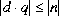
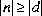
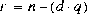
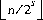

Contents | Prev | Next | Index
CHAPTER
15
Expressions
Much of the work in a Java program is done by evaluating expressions, either
for their side effects, such as assignments to variables, or for their values, which
can be used as arguments or operands in larger expressions, or to affect the execution
sequence in statements, or both.
This chapter specifies the meanings of Java expressions and the rules for their evaluation.
15.1 Evaluation, Denotation, and Result
When an expression in a Java program is evaluated (executed), the result denotes
one of three things:
- A variable (§4.5) (in C, this would be called an lvalue)
- A value (§4.2, §4.3)
- Nothing (the expression is said to be
void)
Evaluation of an expression can also produce side effects, because expressions may contain embedded assignments, increment operators, decrement operators, and method invocations.
An expression denotes nothing if and only if it is a method invocation (§15.11) that invokes a method that does not return a value, that is, a method declared void (§8.4). Such an expression can be used only as an expression statement (§14.7), because every other context in which an expression can appear requires the expression to denote something. An expression statement that is a method invocation may also invoke a method that produces a result; in this case the value returned by the method is quietly discarded.
Each expression occurs in the declaration of some (class or interface) type that is being declared: in a field initializer, in a static initializer, in a constructor declaration, or in the code for a method.
15.2 Variables as Values
If an expression denotes a variable, and a value is required for use in further evaluation,
then the value of that variable is used. In this context, if the expression
denotes a variable or a value, we may speak simply of the value of the expression.
15.3 Type of an Expression
If an expression denotes a variable or a value, then the expression has a type
known at compile time. The rules for determining the type of an expression are
explained separately below for each kind of expression.
The value of an expression is always assignment compatible (§5.2) with the type of the expression, just as the value stored in a variable is always compatible with the type of the variable. In other words, the value of an expression whose type is T is always suitable for assignment to a variable of type T.
Note that an expression whose type is a class type F that is declared final is guaranteed to have a value that is either a null reference or an object whose class is F itself, because final types have no subclasses.
15.4 Expressions and Run-Time Checks
If the type of an expression is a primitive type, then the value of the expression is
of that same primitive type. But if the type of an expression is a reference type,
then the class of the referenced object, or even whether the value is a reference to
an object rather than null, is not necessarily known at compile time. There are a
few places in the Java language where the actual class of a referenced object
affects program execution in a manner that cannot be deduced from the type of the
expression. They are as follows:
- Method invocation (§15.11). The particular method used for an invocation
o.m(...) is chosen based on the methods that are part of the class or interface that is the type of o. For instance methods, the class of the object referenced by the run-time value of o participates because a subclass may override a specific method already declared in a parent class so that this overriding method is invoked. (The overriding method may or may not choose to further invoke the original overridden m method.)
- The
instanceof operator (§15.19.2). An expression whose type is a reference type may be tested using instanceof to find out whether the class of the object referenced by the run-time value of the expression is assignment compatible (§5.2) with some other reference type.
- Casting (§5.4, §15.15). The class of the object referenced by the run-time value of the operand expression might not be compatible with the type specified by the cast. For reference types, this may require a run-time check that throws an error if the class of the referenced object, as determined at run time, is not assignment compatible (§5.2) with the target type.
- Assignment to an array component of reference type (§10.10, §15.12, §15.25.1). The type-checking rules allow the array type S
[] to be treated as a subtype of T[] if S is a subtype of T, but this requires a run-time check for assignment to an army component, similar to the check performed for a cast.
- Exception handling (§14.18). An exception is caught by a
catch clause only if the class of the thrown exception object is an instanceof the type of the formal parameter of the catch clause.
The first two of the cases just listed ought never to result in detecting a type error.
Thus, a Java run-time type error can occur only in these situations:
- In a cast, when the actual class of the object referenced by the value of the operand expression is not compatible with the target type specified by the cast operator (§5.4, §15.15); in this case a
ClassCastException is thrown.
- In an assignment to an array component of reference type, when the actual class of the object referenced by the value to be assigned is not compatible with the actual run-time component type of the array (§10.10, §15.12, §15.25.1); in this case an
ArrayStoreException is thrown.
- When an exception is not caught by any
catch handler (§11.3); in this case the thread of control that encountered the exception first invokes the method uncaughtException (§20.21.31) for its thread group and then terminates.
15.5 Normal and Abrupt Completion of Evaluation
Every expression has a normal mode of evaluation in which certain computational
steps are carried out. The following sections describe the normal mode of evaluation
for each kind of expression. If all the steps are carried out without an exception
being thrown, the expression is said to complete normally.
If, however, evaluation of an expression throws an exception, then the expression is said to complete abruptly. An abrupt completion always has an associated reason, which is always a throw with a given value.
Run-time exceptions are thrown by the predefined operators as follows:
- A class instance creation expression (§15.8), array creation expression (§15.9), or string concatenation operatior expression (§15.17.1) throws an
OutOfMemoryError if there is insufficient memory available.
- An array creation expression throws an
ArrayNegativeSizeException if the value of any dimension expression is less than zero (§15.9).
- A field access (§15.10) throws a
NullPointerException if the value of the object reference expression is null.
- A method invocation expression (§15.11) that invokes an instance method throws a
NullPointerException if the target reference is null.
- An array access (§15.12) throws a
NullPointerException if the value of the array reference expression is null.
- An array access (§15.12) throws an
IndexOutOfBoundsException if the value of the array index expression is negative or greater than or equal to the length of the array.
- A cast (§15.15) throws a
ClassCastException if a cast is found to be impermissible at run time.
- An integer division (§15.16.2) or integer remainder (§15.16.3) operator throws an
ArithmeticException if the value of the right-hand operand expression is zero.
- An assignment to an array component of reference type (§15.25.1) throws an
ArrayStoreException when the value to be assigned is not compatible with the component type of the array.
A method invocation expression can also result in an exception being thrown if an
exception occurs that causes execution of the method body to complete abruptly.
A class instance creation expression can also result in an exception being thrown
if an exception occurs that causes execution of the constructor to complete
abruptly. Various linkage and virtual machine errors may also occur during the
evaluation of an expression. By their nature, such errors are difficult to predict and
difficult to handle.
If an exception occurs, then evaluation of one or more expressions may be terminated before all steps of their normal mode of evaluation are complete; such expressions are said to complete abruptly. The terms "complete normally" and "complete abruptly" are also applied to the execution of statements (§14.1). A statement may complete abruptly for a variety of reasons, not just because an exception is thrown.
If evaluation of an expression requires evaluation of a subexpression, abrupt completion of the subexpression always causes the immediate abrupt completion of the expression itself, with the same reason, and all succeeding steps in the normal mode of evaluation are not performed.
15.6 Evaluation Order
Java guarantees that the operands of operators appear to be evaluated in a specific
evaluation order, namely, from left to right.
It is recommended that Java code not rely crucially on this specification. Code is usually clearer when each expression contains at most one side effect, as its outermost operation, and when code does not depend on exactly which exception arises as a consequence of the left-to-right evaluation of expressions.
15.6.1 Evaluate Left-Hand Operand First
The left-hand operand of a binary operator appears to be fully evaluated before
any part of the right-hand operand is evaluated. For example, if the left-hand operand
contains an assignment to a variable and the right-hand operand contains a
reference to that same variable, then the value produced by the reference will
reflect the fact that the assignment occurred first.
Thus:
class Test {
public static void main(String[] args) {
int i = 2;
int j = (i=3) * i;
System.out.println(j);
}
}
prints:
9
It is not permitted for it to print 6 instead of 9.
If the operator is a compound-assignment operator (§15.25.2), then evaluation of the left-hand operand includes both remembering the variable that the left-hand operand denotes and fetching and saving that variable's value for use in the implied combining operation. So, for example, the test program:
class Test {
public static void main(String[] args) {
int a = 9;
a += (a = 3); // first example
System.out.println(a);
int b = 9;
b = b + (b = 3); // second example
System.out.println(b);
}
}
prints:
12
12
because the two assignment statements both fetch and remember the value of the
left-hand operand, which is 9, before the right-hand operand of the addition is
evaluated, thereby setting the variable to 3. It is not permitted for either example
to produce the result 6. Note that both of these examples have unspecified behavior
in C, according to the ANSI/ISO standard.
If evaluation of the left-hand operand of a binary operator completes abruptly, no part of the right-hand operand appears to have been evaluated.
Thus, the test program:
class Test {
public static void main(String[] args) {
int j = 1;
try {
int i = forgetIt() / (j = 2);
} catch (Exception e) {
System.out.println(e);
System.out.println("Now j = " + j);
}
}
static int forgetIt() throws Exception {
throw new Exception("I'm outta here!");
}
}
prints:
java.lang.Exception: I'm outta here!
Now j = 1
because the left-hand operand forgetIt() of the operator / throws an exception
before the right-hand operand and its embedded assignment of 2 to j occurs.
15.6.2 Evaluate Operands before Operation
Java also guarantees that every operand of an operator (except the conditional
operators &&, ||, and ? :) appears to be fully evaluated before any part of the
operation itself is performed.
If the binary operator is an integer division / (§15.16.2) or integer remainder % (§15.16.3), then its execution may raise an ArithmeticException, but this exception is thrown only after both operands of the binary operator have been evaluated and only if these evaluations completed normally.
So, for example, the program:
class Test {
public static void main(String[] args) {
int divisor = 0;
try {
int i = 1 / (divisor * loseBig());
} catch (Exception e) {
System.out.println(e);
}
}
static int loseBig() throws Exception {
throw new Exception("Shuffle off to Buffalo!");
}
}
always prints:
java.lang.Exception: Shuffle off to Buffalo!
and not:
java.lang.ArithmeticException: / by zero
since no part of the division operation, including signaling of a divide-by-zero
exception, may appear to occur before the invocation of loseBig completes, even
though the implementation may be able to detect or infer that the division operation
would certainly result in a divide-by-zero exception.
15.6.3 Evaluation Respects Parentheses and Precedence
Java implementations must respect the order of evaluation as indicated explicitly
by parentheses and implicitly by operator precedence. An implementation may
not take advantage of algebraic identities such as the associative law to rewrite
expressions into a more convenient computational order unless it can be proven
that the replacement expression is equivalent in value and in its observable side
effects, even in the presence of multiple threads of execution (using the thread
execution model in §17), for all possible computational values that might be
involved.
In the case of floating-point calculations, this rule applies also for infinity and not-a-number (NaN) values. For example, !(x<y) may not be rewritten as x>=y, because these expressions have different values if either x or y is NaN.
Specifically, floating-point calculations that appear to be mathematically associative are unlikely to be computationally associative. Such computations must not be naively reordered. For example, it is not correct for a Java compiler to rewrite 4.0*x*0.5 as 2.0*x; while roundoff happens not to be an issue here, there are large values of x for which the first expression produces infinity (because of overflow) but the second expression produces a finite result.
So, for example, the test program:
class Test {
public static void main(String[] args) {
double d = 8e+307;
System.out.println(4.0 * d * 0.5);
System.out.println(2.0 * d);
}
}
prints:
Infinity
1.6e+308
because the first expression overflows and the second does not.
In contrast, integer addition and multiplication are provably associative in Java; for example a+b+c, where a, b, and c are local variables (this simplifying assumption avoids issues involving multiple threads and volatile variables), will always produce the same answer whether evaluated as (a+b)+c or a+(b+c); if the expression b+c occurs nearby in the code, a smart compiler may be able to use this common subexpression.
15.6.4 Argument Lists are Evaluated Left-to-Right
In a method or constructor invocation or class instance creation expression, argument
expressions may appear within the parentheses, separated by commas. Each
argument expression appears to be fully evaluated before any part of any argument
expression to its right.
Thus:
class Test {
public static void main(String[] args) {
String s = "going, ";
print3(s, s, s = "gone");
}
static void print3(String a, String b, String c) {
System.out.println(a + b + c);
}
}
always prints:
going, going, gone
because the assignment of the string "gone" to s occurs after the first two arguments
to print3 have been evaluated.
If evaluation of an argument expression completes abruptly, no part of any argument expression to its right appears to have been evaluated.
Thus, the example:
class Test {
static int id;
public static void main(String[] args) {
try {
test(id = 1, oops(), id = 3);
} catch (Exception e) {
System.out.println(e + ", id=" + id);
}
}
static int oops() throws Exception {
throw new Exception("oops");
}
static int test(int a, int b, int c) {
return a + b + c;
}
}
prints:
java.lang.Exception: oops, id=1
because the assignment of 3 to id is not executed.
15.6.5 Evaluation Order for Other Expressions
The order of evaluation for some expressions is not completely covered by these
general rules, because these expressions may raise exceptional conditions at times
that must be specified. See, specifically, the detailed explanations of evaluation
order for the following kinds of expressions:
15.7 Primary Expressions
Primary expressions include most of the simplest kinds of expressions, from
which all others are constructed: literals, field accesses, method invocations, and
array accesses. A parenthesized expression is also treated syntactically as a primary
expression.
Primary:
PrimaryNoNewArray
ArrayCreationExpression
PrimaryNoNewArray:
Literal
this
( Expression )
ClassInstanceCreationExpression
FieldAccess
MethodInvocation
ArrayAccess
As programming language grammars go, this part of the Java grammar is unusual, in two ways. First, one might expect simple names, such as names of local variables and method parameters, to be primary expressions. For technical reasons, names are lumped together with primary expressions a little later when postfix expressions are introduced (§15.13).
The technical reasons have to do with allowing left-to-right parsing of Java programs with only one-token lookahead. Consider the expressions (z[3]) and (z[]). The first is a parenthesized array access (§15.12) and the second is the start of a cast (§15.15). At the point that the look-ahead symbol is [, a left-to-right parse will have reduced the z to the nonterminal Name. In the context of a cast we prefer not to have to reduce the name to a Primary, but if Name were one of the alternatives for Primary, then we could not tell whether to do the reduction (that is, we could not determine whether the current situation would turn out to be a parenthesized array access or a cast) without looking ahead two tokens, to the token following the [. The Java grammar presented here avoids the problem by keeping Name and Primary separate and allowing either in certain other syntax rules (those for MethodInvocation, ArrayAccess, PostfixExpression, but not for FieldAccess, because this is covered by Name). This strategy effectively defers the question of whether a Name should be treated as a Primary until more context can be examined. (Other problems remain with cast expressions; see §19.1.5.)
The second unusual feature avoids a potential grammatical ambiguity in the expression:
new int[3][3]
which in Java always means a single creation of a multidimensional array, but
which, without appropriate grammatical finesse, might also be interpreted as
meaning the same as:
(new int[3])[3]
This ambiguity is eliminated by splitting the expected definition of Primary into
Primary and PrimaryNoNewArray. (This may be compared to the splitting of
Statement into Statement and StatementNoShortIf (§14.4) to avoid the "dangling
else" problem.)
15.7.1 Literals
A literal (§3.10) denotes a fixed, unchanging value.
The following production from §3.10 is repeated here for convenience:
Literal:
IntegerLiteral
FloatingPointLiteral
BooleanLiteral
CharacterLiteral
StringLiteral
NullLiteral
The type of a literal is determined as follows:
- The type of an integer literal that ends with
L or l is long; the type of any other integer literal is int.
- The type of a floating-point literal that ends with
F or f is float; the type of any other floating-point literal is double.
- The type of a boolean literal is
boolean.
- The type of a character literal is
char.
- The type of a string literal is
String.
- The type of the null literal
null is the null type; its value is the null reference.
Evaluation of a literal always completes normally.
15.7.2 this
The keyword this may be used only in the body of an instance method or constructor,
or in the initializer of an instance variable of a class. If it appears anywhere
else, a compile-time error occurs.
When used as a primary expression, the keyword this denotes a value, that is a reference to the object for which the instance method was invoked (§15.11), or to the object being constructed. The type of this is the class C within which the keyword this occurs. At run time, the class of the actual object referred to may be the class C or any subclass of C.
In the example:
class IntVector {
int[] v;
boolean equals(IntVector other) {
if (this == other)
return true;
if (v.length != other.v.length)
return false;
for (int i = 0; i < v.length; i++)
if (v[i] != other.v[i])
return false;
return true;
}
}
the class IntVector implements a method equals, which compares two vectors.
If the other vector is the same vector object as the one for which the equals
method was invoked, then the check can skip the length and value comparisons.
The equals method implements this check by comparing the reference to the
other object to this.
The keyword this is also used in a special explicit constructor invocation statement, which can appear at the beginning of a constructor body (§8.6.5).
15.7.3 Parenthesized Expressions
A parenthesized expression is a primary expression whose type is the type of the
contained expression and whose value at run time is the value of the contained
expression.
15.8 Class Instance Creation Expressions
A class instance creation expression is used to create new objects that are
instances of classes.
ClassInstanceCreationExpression:
new ClassType ( ArgumentListopt )
ArgumentList:
Expression
ArgumentList , Expression
In a class instance creation expression, the ClassType must name a class that is not abstract. This class type is the type of the creation expression.
The arguments in the argument list, if any, are used to select a constructor declared in the body of the named class type, using the same matching rules as for method invocations (§15.11). As in method invocations, a compile-time method matching error results if there is no unique constructor that is both applicable to the provided arguments and the most specific of all the applicable constructors.
15.8.1 Run-time Evaluation of Class Instance Creation Expressions
At run time, evaluation of a class instance creation expression is as follows.
First, space is allocated for the new class instance. If there is insufficient space to allocate the object, evaluation of the class instance creation expression completes abruptly by throwing an OutOfMemoryError (§15.8.2).
The new object contains new instances of all the fields declared in the specified class type and all its superclasses. As each new field instance is created, it is initialized to its standard default value (§4.5.4).
Next, the argument list is evaluated, left-to-right. If any of the argument evaluations completes abruptly, any argument expressions to its right are not evaluated, and the class instance creation expression completes abruptly for the same reason.
Next, the selected constructor of the specified class type is invoked. This results in invoking at least one constructor for each superclass of the class type. This process can be directed by explicit constructor invocation statements (§8.6) and is described in detail in §12.5.
The value of a class instance creation expression is a reference to the newly created object of the specified class. Every time the expression is evaluated, a fresh object is created.
15.8.2 Example: Evaluation Order and Out-of-Memory Detection
If evaluation of a class instance creation expression finds there is insufficient
memory to perform the creation operation, then an OutOfMemoryError is thrown.
This check occurs before any argument expressions are evaluated.
So, for example, the test program:
class List {
int value;
List next;
static List head = new List(0);
List(int n) { value = n; next = head; head = this; }
}
class Test {
public static void main(String[] args) {
int id = 0, oldid = 0;
try {
for (;;) {
++id;
new List(oldid = id);
}
} catch (Error e) {
System.out.println(e + ", " + (oldid==id));
}
}
}
prints:
java.lang.OutOfMemoryError: List, false
because the out-or-memory condition is detected before the argument expression
oldid = id is evaluated.
Compare this to the treatment of array creation expressions (§15.9), for which the out-of-memory condition is detected after evaluation of the dimension expressions (§15.9.3).
15.9 Array Creation Expressions
An array instance creation expression is used to create new arrays (§10).
ArrayCreationExpression:
new PrimitiveType DimExprs Dimsopt
new TypeName DimExprs Dimsopt
DimExprs:
DimExpr
DimExprs DimExpr
DimExpr:
[ Expression ]
Dims:
[ ]
Dims [ ]
An array creation expression creates an object that is a new array whose elements are of the type specified by the PrimitiveType or TypeName. The TypeName may name any reference type, even an abstract class type (§8.1.2.1) or an interface type (§9).
The type of the creation expression is an array type that can denoted by a copy of the creation expression from which the new keyword and every DimExpr expression have been deleted; for example, the type of the creation expression:
new double[3][3][]
is:
double[][][]
The type of each dimension expression DimExpr must be an integral type, or a compile-time error occurs. Each expression undergoes unary numeric promotion (§5.6.1). The promoted type must be int, or a compile-time error occurs; this means, specifically, that the type of a dimension expression must not be long.
15.9.1 Run-time Evaluation of Array Creation Expressions
At run time, evaluation of an array creation expression behaves as follows.
First, the dimension expressions are evaluated, left-to-right. If any of the expression evaluations completes abruptly, the expressions to the right of it are not evaluated.
Next, the values of the dimension expressions are checked. If the value of any DimExpr expression is less than zero, then an NegativeArraySizeException is thrown.
Next, space is allocated for the new array. If there is insufficient space to allocate the array, evaluation of the array creation expression completes abruptly by throwing an OutOfMemoryError.
Then, if a single DimExpr appears, a single-dimensional array is created of the specified length, and each component of the array is initialized to its standard default value (§4.5.4).
If an array creation expression contains N DimExpr expressions, then it effectively executes a set of nested loops of depth to create the implied arrays of arrays. For example, the declaration:
float[][] matrix = new float[3][3];
is equivalent in behavior to:
float[][] matrix = new float[3][];
for (int d = 0; d < matrix.length; d++)
matrix[d] = new float[3];
and:
Age[][][][][] Aquarius = new Age[6][10][8][12][];
is equivalent to:
Age[][][][][] Aquarius = new Age[6][][][][];
for (int d1 = 0; d1 < Aquarius.length; d1++) {
Aquarius[d1] = new Age[8][][][];
for (int d2 = 0; d2 < Aquarius[d1].length; d2++) {
Aquarius[d1][d2] = new Age[10][][];
for (int d3 = 0; d3 < Aquarius[d1][d2].length; d3++) {
Aquarius[d1][d2][d3] = new Age[12][];
}
}
}
with d, d1, d2 and d3 replaced by names that are not already locally declared.
Thus, a single new expression actually creates one array of length 6, 6 arrays of
length 10, arrays of length 8, and arrays of length
12. This example leaves the fifth dimension, which would be arrays containing the
actual array elements (references to Age objects), initialized only to null references.
These arrays can be filled in later by other code, such as:
Age[] Hair = { new Age("quartz"), new Age("topaz") };
Aquarius[1][9][6][9] = Hair;
A multidimensional array need not have arrays of the same length at each level; thus, a triangular matrix may be created by:
float triang[][] = new float[100][];
for (int i = 0; i < triang.length; i++)
triang[i] = new float[i+1];
There is, however, no way to get this effect with a single creation expression.
15.9.2 Example: Array Creation Evaluation Order
In an array creation expression (§15.9), there may be one or more dimension
expressions, each within brackets. Each dimension expression is fully evaluated
before any part of any dimension expression to its right.
Thus:
class Test {
public static void main(String[] args) {
int i = 4;
int ia[][] = new int[i][i=3];
System.out.println(
"[" + ia.length + "," + ia[0].length + "]");
}
}
prints:
[4,3]
because the first dimension is calculated as 4 before the second dimension expression
sets i to 3.
If evaluation of a dimension expression completes abruptly, no part of any dimension expression to its right will appear to have been evaluated. Thus, the example:
class Test {
public static void main(String[] args) {
int[][] a = { { 00, 01 }, { 10, 11 } };
int i = 99;
try {
a[val()][i = 1]++;
} catch (Exception e) {
System.out.println(e + ", i=" + i);
}
}
static int val() throws Exception {
throw new Exception("unimplemented");
}
}
prints:
java.lang.Exception: unimplemented, i=99
because the embedded assignment that sets i to 1 is never executed.
15.9.3 Example: Array Creation and Out-of-Memory Detection
If evaluation of an array creation expression finds there is insufficient memory to
perform the creation operation, then an OutOfMemoryError is thrown. This check
occurs only after evaluation of all dimension expressions has completed normally.
So, for example, the test program:
class Test {
public static void main(String[] args) {
int len = 0, oldlen = 0;
Object[] a = new Object[0];
try {
for (;;) {
++len;
Object[] temp = new Object[oldlen = len];
temp[0] = a;
a = temp;
}
} catch (Error e) {
System.out.println(e + ", " + (oldlen==len));
}
}
}
prints:
java.lang.OutOfMemoryError, true
because the out-of-memory condition is detected after the argument expression
oldlen = len is evaluated.
Compare this to class instance creation expressions (§15.8), which detect the out-of-memory condition before evaluating argument expressions (§15.8.2).
15.10 Field Access Expressions
A field access expression may access a field of an object or array, a reference to
which is the value of either an expression or the special keyword super. (It is also
possible to refer to a field of the current instance or current class by using a simple
name; see §15.13.1.)
FieldAccess:
Primary . Identifier
super . Identifier
The meaning of a field access expression is determined using the same rules as for qualified names (§6.6), but limited by the fact that an expression cannot denote a package, class type, or interface type.
15.10.1 Field Access Using a Primary
The type of the Primary must be a reference type T, or a compile-time error
occurs. The meaning of the field access expression is determined as follows:
- If the identifier names several accessible member fields of type T, then the field access is ambiguous and a compile-time error occurs.
- If the identifier does not name an accessible member field of type T, then the field access is undefined and a compile-time error occurs.
- Otherwise, the identifier names a single accessible member field of type T and the type of the field access expression is the declared type of the field. At run time, the result of the field access expression is computed as follows:
- If the field is
static:
- If the field is
final, then the result is the value of the specified class variable in the class or interface that is the type of the Primary expression.
- If the field is not
final, then the result is a variable, namely, the specified class variable in the class that is the type of the Primary expression.
- If the field is not
static:
- If the value of the Primary is
null, then a NullPointerException is thrown.
- If the field is
final, then the result is the value of the specified instance variable in the object referenced by the value of the Primary.
- If the field is not
final, then the result is a variable, namely, the specified instance variable in the object referenced by the value of the Primary.
Note, specifically, that only the type of the Primary expression, not the class of the
actual object referred to at run time, is used in determining which field to use.
Thus, the example:
class S { int x = 0; }
class T extends S { int x = 1; }
class Test {
public static void main(String[] args) {
T t = new T();
System.out.println("t.x=" + t.x + when("t", t));
S s = new S();
System.out.println("s.x=" + s.x + when("s", s));
s = t;
System.out.println("s.x=" + s.x + when("s", s));
}
static String when(String name, Object t) {
return " when " + name + " holds a "
+ t.getClass() + " at run time.";
}
}
produces the output:
t.x=1 when t holds a class T at run time.
s.x=0 when s holds a class S at run time.
s.x=0 when s holds a class T at run time.
The last line shows that, indeed, the field that is accessed does not depend on the
run-time class of the referenced object; even if s holds a reference to an object of
class T, the expression s.x refers to the x field of class S, because the type of the
expression s is S. Objects of class T contain two fields named x, one for class T
and one for its superclass S.
This lack of dynamic lookup for field accesses allows Java to run efficiently with straightforward implementations. The power of late binding and overriding is available in Java, but only when instance methods are used. Consider the same example using instance methods to access the fields:
class S { int x = 0; int z() { return x; } }
class T extends S { int x = 1; int z() { return x; } }
class Test {
public static void main(String[] args) {
T t = new T();
System.out.println("t.z()=" + t.z() + when("t", t));
S s = new S();
System.out.println("s.z()=" + s.z() + when("s", s));
s = t;
System.out.println("s.z()=" + s.z() + when("s", s));
}
static String when(String name, Object t) {
return " when " + name + " holds a "
+ t.getClass() + " at run time.";
}
}
Now the output is:
t.z()=1 when t holds a class T at run time.
s.z()=0 when s holds a class S at run time.
s.z()=1 when s holds a class T at run time.
The last line shows that, indeed, the method that is accessed does depend on the
run-time class of referenced object; when s holds a reference to an object of class
T, the expression s.z() refers to the z method of class T, despite the fact that the
type of the expression s is S. Method z of class T overrides method z of class S.
The following example demonstrates that a null reference may be used to access a class (static) variable without causing an exception:
class Test {
static String mountain = "Chocorua";
static Test favorite(){
System.out.print("Mount ");
return null;
}
public static void main(String[] args) {
System.out.println(favorite().mountain);
}
}
It compiles, executes, and prints:
Mount Chocorua
Even though the result of favorite() is null, a NullPointerException is not
thrown. That "Mount " is printed demonstrates that the Primary expression is
indeed fully evaluated at run time, despite the fact that only its type, not its value,
is used to determine which field to access (because the field mountain is static).
15.10.2 Accessing Superclass Members using super
The special form using the keyword super is valid only in an instance method or
constructor, or in the initializer of an instance variable of a class; these are exactly
the same situations in which the keyword this may be used (§15.7.2). The form
involving super may not be used anywhere in the class Object, since Object has
no superclass; if super appears in class Object, then a compile-time error results.
Suppose that a field access expression super.name appears within class C, and the immediate superclass of C is class S. Then super.name is treated exactly as if it had been the expression ((S)this).name; thus, it refers to the field named name of the current object, but with the current object viewed as an instance of the superclass. Thus it can access the field named name that is visible in class S, even if that field is hidden by a declaration of a field named name in class C.
The use of super is demonstrated by the following example:
interface I { int x = 0; }
class T1 implements I { int x = 1; }
class T2 extends T1 { int x = 2; }
class T3 extends T2 {
int x = 3;
void test() {
System.out.println("x=\t\t"+x);
System.out.println("super.x=\t\t"+super.x);
System.out.println("((T2)this).x=\t"+((T2)this).x);
System.out.println("((T1)this).x=\t"+((T1)this).x);
System.out.println("((I)this).x=\t"+((I)this).x);
}
}
class Test {
public static void main(String[] args) {
new T3().test();
}
}
which produces the output:
x= 3
super.x= 2
((T2)this).x= 2
((T1)this).x= 1
((I)this).x= 0
Within class T3, the expression super.x is treated exactly as if it were:
((T2)this).x
15.11 Method Invocation Expressions
A method invocation expression is used to invoke a class or instance method.
MethodInvocation:
MethodName ( ArgumentListopt )
Primary . Identifier ( ArgumentListopt )
super . Identifier ( ArgumentListopt )
The definition of ArgumentList from §15.8 is repeated here for convenience:
ArgumentList:
Expression
ArgumentList , Expression
Resolving a method name at compile time is more complicated than resolving a field name because of the possibility of method overloading. Invoking a method at run time is also more complicated than accessing a field because of the possibility of instance method overriding.
Determining the method that will be invoked by a method invocation expression involves several steps. The following three sections describe the compile-time processing of a method invocation; the determination of the type of the method invocation expression is described in §15.11.3.
15.11.1 Compile-Time Step 1: Determine Class or Interface to Search
The first step in processing a method invocation at compile time is to figure out
the name of the method to be invoked and which class or interface to check for
definitions of methods of that name. There are several cases to consider, depending
on the form that precedes the left parenthesis, as follows:
- If the form is MethodName, then there are three subcases:
- If it is a simple name, that is, just an Identifier, then the name of the method is the Identifier and the class or interface to search is the one whose declaration contains the method invocation.
- If it is a qualified name of the form TypeName
. Identifier, then the name of the method is the Identifier and the class to search is the one named by the TypeName. If TypeName is the name of an interface rather than a class, then a compile-time error occurs, because this form can invoke only static methods and interfaces have no static methods.
- In all other cases, the qualified name has the form FieldName
. Identifier; then the name of the method is the Identifier and the class or interface to search is the declared type of the field named by the FieldName.
- If the form is Primary
. Identifier, then the name of the method is the Identifier and the class or interface to be searched is the type of the Primary expression.
- If the form is
super . Identifier, then the name of the method is the Identifier and the class to be searched is the superclass of the class whose declaration contains the method invocation. A compile-time error occurs if such a method invocation occurs in an interface, or in the class Object, or in a static method, a static initializer, or the initializer for a static variable. It follows that a method invocation of this form may appear only in a class other than Object, and only in the body of an instance method, the body of a constructor, or an initializer for an instance variable.
15.11.2 Compile-Time Step 2: Determine Method Signature
The second step searches the class or interface determined in the previous step for
method declarations. This step uses the name of the method and the types of the
argument expressions to locate method declarations that are both applicable and
accessible, that is, declarations that can be correctly invoked on the given arguments.
There may be more than one such method declaration, in which case the
most specific one is chosen. The descriptor (signature plus return type) of the most
specific method declaration is one used at run time to do the method dispatch.
15.11.2.1 Find Methods that are Applicable and Accessible
A method declaration is applicable to a method invocation if and only if both of
the following are true:
- The number of parameters in the method declaration equals the number of argument expressions in the method invocation.
- The type of each actual argument can be converted by method invocation conversion (§5.3) to the type of the corresponding parameter. Method invocation conversion is the same as assignment conversion (§5.2), except that constants of type
int are never implicitly narrowed to byte, short, or char.
The class or interface determined by the process described in §15.11.1 is searched for all method declarations applicable to this method invocation; method definitions inherited from superclasses and superinterfaces are included in this search.
Whether a method declaration is accessible to a method invocation depends on the access modifier (public, none, protected, or private) in the method declaration and on where the method invocation appears.
If the class or interface has no method declaration that is both applicable and accessible, then a compile-time error occurs.
In the example program:
public class Doubler {
static int two() { return two(1); }
private static int two(int i) { return 2*i; }
}
class Test extends Doubler {
public static long two(long j) {return j+j; }
public static void main(String[] args) {
System.out.println(two(3));
System.out.println(Doubler.two(3)); // compile-time error
}
}
for the method invocation two(1) within class Doubler, there are two accessible
methods named two, but only the second one is applicable, and so that is the one
invoked at run time. For the method invocation two(3) within class Test, there
are two applicable methods, but only the one in class Test is accessible, and so
that is the one to be invoked at run time (the argument 3 is converted to type
long). For the method invocation Doubler.two(3), the class Doubler, not class
Test, is searched for methods named two; the only applicable method is not
accessible, and so this method invocation causes a compile-time error.
Another example is:
class ColoredPoint {
int x, y;
byte color;
void setColor(byte color) { this.color = color; }
}
class Test {
public static void main(String[] args) {
ColoredPoint cp = new ColoredPoint();
byte color = 37;
cp.setColor(color);
cp.setColor(37); // compile-time error
}
}
Here, a compile-time error occurs for the second invocation of setColor, because
no applicable method can be found at compile time. The type of the literal 37 is
int, and int cannot be converted to byte by method invocation conversion.
Assignment conversion, which is used in the initialization of the variable color,
performs an implicit conversion of the constant from type int to byte, which is
permitted because the value 37 is small enough to be represented in type byte; but
such a conversion is not allowed for method invocation conversion.
If the method setColor had, however, been declared to take an int instead of a byte, then both method invocations would be correct; the first invocation would be allowed because method invocation conversion does permit a widening conversion from byte to int. However, a narrowing cast would then be required in the body of setColor:
void setColor(int color) { this.color = (byte)color; }
15.11.2.2 Choose the Most Specific Method
If more than one method is both accessible and applicable to a method invocation,
it is necessary to choose one to provide the descriptor for the run-time method dispatch.
Java uses the rule that the most specific method is chosen.
The informal intuition is that one method declaration is more specific than another if any invocation handled by the first method could be passed on to the other one without a compile-time type error.
The precise definition is as follows. Let m be a name and suppose that there are two declarations of methods named m, each having n parameters. Suppose that one declaration appears within a class or interface T and that the types of the parameters are T1, . . . , Tn; suppose moreover that the other declaration appears within a class or interface U and that the types of the parameters are U1, . . . , Un. Then the method m declared in T is more specific than the method m declared in U
- T can be converted to U
- Tj can be converted to Uj
1 to n.
A method is said to be maximally specific for a method invocation if it is applicable and accessible and there is no other applicable and accessible method that is more specific.
If there is exactly one maximally specific method, then it is in fact the most specific method; it is necessarily more specific than any other method that is applicable and accessible. It is then subjected to some further compile-time checks as described in §15.11.3.
It is possible that no method is the most specific, because there are two or more maximally specific method declarations. In this case, we say that the method invocation is ambiguous, and a compile-time error occurs.
15.11.2.3 Example: Overloading Ambiguity
Consider the example:
class Point { int x, y; }
class ColoredPoint extends Point { int color; }
class Test {
static void test(ColoredPoint p, Point q) {
System.out.println("(ColoredPoint, Point)");
}
static void test(Point p, ColoredPoint q) {
System.out.println("(Point, ColoredPoint)");
}
public static void main(String[] args) {
ColoredPoint cp = new ColoredPoint();
test(cp, cp); // compile-time error
}
}
This example produces an error at compile time. The problem is that there are two
declarations of test that are applicable and accessible, and neither is more specific
than the other. Therefore, the method invocation is ambiguous.
If a third definition of test were added:
static void test(ColoredPoint p, ColoredPoint q) {
System.out.println("(ColoredPoint, ColoredPoint)");
}
then it would be more specific than the other two, and the method invocation
would no longer be ambiguous.
15.11.2.4 Example: Return Type Not Considered
As another example, consider:
class Point { int x, y; }
class ColoredPoint extends Point { int color; }
class Test {
static int test(ColoredPoint p) {
return color;
}
static String test(Point p) {
return "Point";
}
public static void main(String[] args) {
ColoredPoint cp = new ColoredPoint();
String s = test(cp); // compile-time error
}
}
Here the most specific declaration of method test is the one taking a parameter
of type ColoredPoint. Because the result type of the method is int, a compile-
time error occurs because an int cannot be converted to a String by assignment
conversion. This example shows that, in Java, the result types of methods do not
participate in resolving overloaded methods, so that the second test method,
which returns a String, is not chosen, even though it has a result type that would
allow the example program to compile without error.
15.11.2.5 Example: Compile-Time Resolution
The most applicable method is chosen at compile time; its descriptor determines
what method is actually executed at run time. If a new method is added to a class,
then Java code that was compiled with the old definition of the class might not use
the new method, even if a recompilation would cause this method to be chosen.
So, for example, consider two compilation units, one for class Point:
package points;
public class Point {
public int x, y;
public Point(int x, int y) { this.x = x; this.y = y; }
public String toString() { return toString(""); }
public String toString(String s) {
return "(" + x + "," + y + s + ")";
}
}
and one for class ColoredPoint:
package points;
public class ColoredPoint extends Point {
public static final int
RED = 0, GREEN = 1, BLUE = 2;
public static String[] COLORS =
{ "red", "green", "blue" };
public byte color;
public ColoredPoint(int x, int y, int color) {
super(x, y); this.color = (byte)color;
}
/** Copy all relevant fields of the argument into
this ColoredPoint object. */
public void adopt(Point p) { x = p.x; y = p.y; }
public String toString() {
String s = "," + COLORS[color];
return super.toString(s);
}
}
Now consider a third compilation unit that uses ColoredPoint:
import points.*;
class Test {
public static void main(String[] args) {
ColoredPoint cp =
new ColoredPoint(6, 6, ColoredPoint.RED);
ColoredPoint cp2 =
new ColoredPoint(3, 3, ColoredPoint.GREEN);
cp.adopt(cp2);
System.out.println("cp: " + cp);
}
}
The output is:
cp: (3,3,red)
The application programmer who coded class Test has expected to see the word green, because the actual argument, a ColoredPoint, has a color field, and color would seem to be a "relevant field" (of course, the documentation for the package Points ought to have been much more precise!).
Notice, by the way, that the most specific method (indeed, the only applicable method) for the method invocation of adopt has a signature that indicates a method of one parameter, and the parameter is of type Point. This signature becomes part of the binary representation of class Test produced by the compiler and is used by the method invocation at run time.
Suppose the programmer reported this software error and the maintainer of the points package decided, after due deliberation, to correct it by adding a method to class ColoredPoint:
public void adopt(ColoredPoint p) {
adopt((Point)p); color = p.color;
}
If the application programmer then runs the old binary file for Test with the new binary file for ColoredPoint, the output is still:
cp: (3,3,red)
because the old binary file for Test still has the descriptor "one parameter, whose
type is Point; void" associated with the method call cp.adopt(cp2). If the
source code for Test is recompiled, the compiler will then discover that there are
now two applicable adopt methods, and that the signature for the more specific
one is "one parameter, whose type is ColoredPoint; void"; running the program
will then produce the desired output:
cp: (3,3,green)
With forethought about such problems, the maintainer of the points package could fix the ColoredPoint class to work with both newly compiled and old code, by adding defensive code to the old adopt method for the sake of old code that still invokes it on ColoredPoint arguments:
public void adopt(Point p) {
if (p instanceof ColoredPoint)
color = ((ColoredPoint)p).color;
x = p.x; y = p.y;
}
A similar consideration applies if a method is to be moved from a class to a superclass. In this case a forwarding method can be left behind for the sake of old code. The maintainer of the points package might choose to move the adopt method that takes a Point argument up to class Point, so that all Point objects may enjoy the adopt functionality. To avoid compatibility problems with old binary code, the maintainer should leave a forwarding method behind in class ColoredPoint:
public void adopt(Point p) {
if (p instanceof ColoredPoint)
color = ((ColoredPoint)p).color;
super.adopt(p);
}
Ideally, Java code should be recompiled whenever code that it depends on is changed. However, in an environment where different Java classes are maintained by different organizations, this is not always feasible. Defensive programming with careful attention to the problems of class evolution can make upgraded code much more robust. See §13 for a detailed discussion of binary compatibility and type evolution.
15.11.3 Compile-Time Step 3: Is the Chosen Method Appropriate?
If there is a most specific method declaration for a method invocation, it is called
the compile-time declaration for the method invocation. Two further checks must
be made on the compile-time declaration:
- If the method invocation has, before the left parenthesis, a MethodName of the form Identifier, and the method invocation appears within a
static method, a static initializer, or the initializer for a static variable, then the compile-time declaration must be static. If, instead, the compile-time declaration for the method invocation is for an instance method, then a compile-time error occurs. (The reason is that a method invocation of this form cannot be used to invoke an instance method in places where this (§15.7.2) is not defined.)
- If the method invocation has, before the left parenthesis, a MethodName of the form TypeName
. Identifier, then the compile-time declaration should be static. If the compile-time declaration for the method invocation is for an instance method, then a compile-time error occurs. (The reason is that a method invocation of this form does not specify a reference to an object that can serve as this within the instance method.)
- If the compile-time declaration for the method invocation is
void, then the method invocation must be a top-level expression, that is, the Expression in an expression statement (§14.7) or in the ForInit or ForUpdate part of a for statement (§14.12), or a compile-time error occurs. (The reason is that such a method invocation produces no value and so must be used only in a situation where a value is not needed.)
The following compile-time information is then associated with the method invocation for use at run time:
- The name of the method.
- The class or interface that contains the compile-time declaration.
- The number of parameters and the types of the parameters, in order.
- The result type, or
void, as declared in the compile-time declaration.
- The invocation mode, computed as follows:
- If the compile-time declaration has the
static modifier, then the invocation mode is static.
- Otherwise, if the compile-time declaration has the
private modifier, then the invocation mode is nonvirtual.
- Otherwise, if the part of the method invocation before the left parenthesis is of the form
super . Identifier, then the invocation mode is super.
- Otherwise, if the compile-time declaration is in an interface, then the invocation mode is
interface.
- Otherwise, the invocation mode is
virtual.
If the compile-time declaration for the method invocation is not void, then the type of the method invocation expression is the result type specified in the compile-time declaration.
15.11.4 Runtime Evaluation of Method Invocation
At run time, method invocation requires five steps. First, a target reference may be
computed. Second, the argument expressions are evaluated. Third, the accessibility
of the method to be invoked is checked. Fourth, the actual code for the method
to be executed is located. Fifth, a new activation frame is created, synchronization
is performed if necessary, and control is transferred to the method code.
15.11.4.1 Compute Target Reference (If Necessary)
There are several cases to consider, depending on which of the three productions
for MethodInvocation (§15.11) is involved:
- If the first production for MethodInvocation, which includes a MethodName, is involved, then there are three subcases:
- If the MethodName is a simple name, that is, just an Identifier, then there are two subcases:
- If the invocation mode is
static, then there is no target reference.
- Otherwise, the target reference is the value of
this.
- If the MethodName is a qualified name of the form TypeName
. Identifier, then there is no target reference.
- If the MethodName is a qualified name of the form FieldName
. Identifier, then there are two subcases:
- If the invocation mode is
static, then there is no target reference.
- Otherwise, the target reference is the value of the expression FieldName.
- If the second production for MethodInvocation, which includes a Primary, is involved, then there are two subcases:
- If the invocation mode is
static, then there is no target reference. The expression Primary is evaluated, but the result is then discarded.
- Otherwise, the expression Primary is evaluated and the result is used as the target reference.
In either case, if the evaluation of the Primary expression completes abruptly, then no part of any argument expression appears to have been evaluated, and the method invocation completes abruptly for the same reason.
- If the third production for MethodInvocation, which includes the keyword
super, is involved, then the target reference is the value of this.
15.11.4.2 Evaluate Arguments
The argument expressions are evaluated in order, from left to right. If the evaluation
of any argument expression completes abruptly, then no part of any argument
expression to its right appears to have been evaluated, and the method invocation
completes abruptly for the same reason.
15.11.4.3 Check Accessibility of Type and Method
Let C be the class containing the method invocation, and let T be the class or interface
that contained the method being invoked, and m be the name of the method,
as determined at compile time (§15.11.3).
A Java Virtual Machine must insure, as part of linkage, that the method m still exists in the type T. If this is not true, then a NoSuchMethodError (which is a subclass of IncompatibleClassChangeError) occurs. If the invocation mode is interface, then the virtual machine must also check that the target reference type still implements the specified interface. If the target reference type does not still implement the interface, then an IncompatibleClassChangeError occurs.
The virtual machine must also insure, during linkage, that the type T and the method m are accessible. For the type T:
- If T is in the same package as C, then T is accessible.
- If T is in a different package than C, and T is
public, then T is accessible.
For the method m:
- If m is
public, then m is accessible. (All members of interfaces are public (§9.2)).
- If m is
protected, then m is accessible if and only if either T is in the same package as C, or C is T or a subclass of T.
- If m has default (package) access, then m is accessible if and only if T is in the same package as C.
- If m is
private, then m is accessible if and only if and C is T.
If either T or m is not accessible, then an IllegalAccessError occurs (§12.3).
15.11.4.4 Locate Method to Invoke
The strategy for method lookup depends on the invocation mode.
If the invocation mode is static, no target reference is needed and overriding is not allowed. Method m of class T is the one to be invoked.
Otherwise, an instance method is to be invoked and there is a target reference. If the target reference is null, a NullPointerException is thrown at this point. Otherwise, the target reference is said to refer to a target object and will be used as the value of the keyword this in the invoked method. The other four possibilities for the invocation mode are then considered.
If the invocation mode is nonvirtual, overriding is not allowed. Method m of class T is the one to be invoked.
Otherwise, the invocation mode is interface, virtual, or super, and overriding may occur. A dynamic method lookup is used. The dynamic lookup process starts from a class S, determined as follows:
- If the invocation mode is
interface or virtual, then S is initially the actual run-time class R of the target object. If the target object is an array, R is the class Object. (Note that for invocation mode interface, R necessarily implements T; for invocation mode virtual, R is necessarily either T or a subclass of T.)
- If the invocation mode is
super, then S is initially the superclass of the class C that contains the method invocation.
The dynamic method lookup uses the following procedure to search class S, and
then the superclasses of class S, as necessary, for method m.
- If class S contains a declaration for a method named m with the same descriptor (same number of parameters, the same parameter types, and the same return type) required by the method invocation as determined at compile time (§15.11.3), then this is the method to be invoked, and the procedure terminates. (We note that as part of the loading and linking process that the virtual machine checks that an overriding method is at least as accessible as the overridden method; an
IncompatibleClassChangeError occurs if this is not the case.)
- Otherwise, if S is not T, this same lookup procedure is performed using the superclass of S; whatever it comes up with is the result of this lookup.
This procedure will find a suitable method when it reaches class T, because otherwise
an IllegalAccessError would have been thrown by the checks of the previous
section §15.11.4.3.
We note that the dynamic lookup process, while described here explicitly, will often be implemented implicitly, for example as a side-effect of the construction and use of per-class method dispatch tables, or the construction of other per-class structures used for efficient dispatch.
15.11.4.5 Create Frame, Synchronize, Transfer Control
A method m in some class S has been identified as the one to be invoked.
Now a new activation frame is created, containing the target reference (if any) and the argument values (if any), as well as enough space for the local variables and stack for the method to be invoked and any other bookkeeping information that may be required by the implementation (stack pointer, program counter, reference to previous activation frame, and the like). If there is not sufficient memory available to create such an activation frame, an OutOfMemoryError is thrown.
The newly created activation frame becomes the current activation frame. The effect of this is to assign the argument values to corresponding freshly created parameter variables of the method, and to make the target reference available as this, if there is a target reference.
If the method m is a native method but the necessary native, implementation-dependent binary code has not been loaded (§20.16.14, §20.16.13) or otherwise cannot be dynamically linked, then an UnsatisfiedLinkError is thrown.
If the method m is not synchronized, control is transferred to the body of the method m to be invoked.
If the method m is synchronized, then an object must be locked before the transfer of control. No further progress can be made until the current thread can obtain the lock. If there is a target reference, then the target must be locked; otherwise the Class object for class S, the class of the method m, must be locked. Control is then transferred to the body of the method m to be invoked. The object is automatically unlocked when execution of the body of the method has completed, whether normally or abruptly. The locking and unlocking behavior is exactly as if the body of the method were embedded in a synchronized statement (§14.17).
15.11.4.6 Implementation Note: Combining Frames
In order to allow certain kinds of code optimization, implementations are permitted
some freedom to combine activation frames. Suppose that a method invocation
within class C is to invoke a method m within class S. Then the current activation
frame may be used to provide space for S instead of creating a new activation
frame only if one of the following conditions is true:
- Class C and class S have the same class loader (§20.14) and class S is not
SecurityManager or a subclass of SecurityManager.
- Class S has no class loader (this fact indicates that it is a system class); class S is not
SecurityManager or a subclass of SecurityManager; and method m is known not to call, directly or indirectly, any method of SecurityManager (§20.17) or any of its subclasses.
15.11.4.7 Example: Target Reference and Static Methods
When a target reference is computed and then discarded because the invocation
mode is static, the reference is not examined to see whether it is null:
class Test {
static void mountain() {
System.out.println("Monadnock");
}
static Test favorite(){
System.out.print("Mount ");
return null;
}
public static void main(String[] args) {
favorite().mountain();
}
}
which prints:
Mount Monadnock
Here favorite returns null, yet no NullPointerException is thrown.
15.11.4.8 Example: Evaluation Order
As part of an instance method invocation (§15.11), there is an expression that
denotes the object to be invoked. This expression appears to be fully evaluated
before any part of any argument expression to the method invocation is evaluated.
So, for example, in:
class Test {
public static void main(String[] args) {
String s = "one";
if (s.startsWith(s = "two"))
System.out.println("oops");
}
}
the occurrence of s before ".startsWith" is evaluated first, before the argument
expression s="two". Therefore, a reference to the string "one" is remembered as
the target reference before the local variable s is changed to refer to the string
"two". As a result, the startsWith method (§20.12.20) is invoked for target
object "one" with argument "two", so the result of the invocation is false, as the
string "one" does not start with "two". It follows that the test program does not
print "oops".
15.11.4.9 Example: Overriding
In the example:
class Point {
final int EDGE = 20;
int x, y;
void move(int dx, int dy) {
x += dx; y += dy;
if (Math.abs(x) >= EDGE || Math.abs(y) >= EDGE)
clear();
}
void clear() {
System.out.println("\tPoint clear");
x = 0; y = 0;
}
}
class ColoredPoint extends Point {
int color;
void clear() {
System.out.println("\tColoredPoint clear");
super.clear();
color = 0;
}
}
the subclass ColoredPoint extends the clear abstraction defined by its superclass
Point. It does so by overriding the clear method with its own method,
which invokes the clear method of its superclass, using the form super.clear.
This method is then invoked whenever the target object for an invocation of clear is a ColoredPoint. Even the method move in Point invokes the clear method of class ColoredPoint when the class of this is ColoredPoint, as shown by the output of this test program:
class Test {
public static void main(String[] args) {
Point p = new Point();
System.out.println("p.move(20,20):");
p.move(20, 20);
ColoredPoint cp = new ColoredPoint();
System.out.println("cp.move(20,20):");
cp.move(20, 20);
p = new ColoredPoint();
System.out.println("p.move(20,20), p colored:");
p.move(20, 20);
}
}
which is:
p.move(20,20):
Point clear
cp.move(20,20):
ColoredPoint clear
Point clear
p.move(20,20), p colored:
ColoredPoint clear
Point clear
Overriding is sometimes called "late-bound self-reference"; in this example it means that the reference to clear in the body of Point.move (which is really syntactic shorthand for this.clear) invokes a method chosen "late" (at run time, based on the run-time class of the object referenced by this) rather than a method chosen "early" (at compile time, based only on the type of this). This provides the Java programmer a powerful way of extending abstractions and is a key idea in object-oriented programming.
15.11.4.10 Example: Method Invocation using super
An overridden instance method of a superclass may be accessed by using the keyword
super to access the members of the immediate superclass, bypassing any
overriding declaration in the class that contains the method invocation.
When accessing an instance variable, super means the same as a cast of this (§15.10.2), but this equivalence does not hold true for method invocation. This is demonstrated by the example:
class T1 {
String s() { return "1"; }
}
class T2 extends T1 {
String s() { return "2"; }
}
class T3 extends T2 {
String s() { return "3"; }
void test() {
System.out.println("s()=\t\t"+s());
System.out.println("super.s()=\t"+super.s());
System.out.print("((T2)this).s()=\t");
System.out.println(((T2)this).s());
System.out.print("((T1)this).s()=\t");
System.out.println(((T1)this).s());
}
}
class Test {
public static void main(String[] args) {
T3 t3 = new T3();
t3.test();
}
}
which produces the output:
s()= 3
super.s()= 2
((T2)this).s()= 3
((T1)this).s()= 3
The casts to types T1 and T2 do not change the method that is invoked, because
the instance method to be invoked is chosen according to the run-time class of the
object referred to be this. A cast does not change the class of an object; it only
checks that the class is compatible with the specified type.
15.12 Array Access Expressions
An array access expression refers to a variable that is a component of an array.
ArrayAccess:
ExpressionName [ Expression ]
PrimaryNoNewArray [ Expression ]
An array access expression contains two subexpressions, the array reference expression (before the left bracket) and the index expression (within the brackets). Note that the array reference expression may be a name or any primary expression that is not an array creation expression (§15.9).
The type of the array reference expression must be an array type (call it T[], an array whose components are of type T) or a compile-time error results. Then the type of the array access expression is T.
The index expression undergoes unary numeric promotion (§5.6.1); the promoted type must be int.
The result of an array reference is a variable of type T, namely the variable within the array selected by the value of the index expression. This resulting variable, which is a component of the array, is never considered final, even if the array reference was obtained from a final variable.
15.12.1 Runtime Evaluation of Array Access
An array access expression is evaluated using the following procedure:
- First, the array reference expression is evaluated. If this evaluation completes abruptly, then the array access completes abruptly for the same reason and the index expression is not evaluated.
- Otherwise, the index expression is evaluated. If this evaluation completes abruptly, then the array access completes abruptly for the same reason.
- Otherwise, if the value of the array reference expression is
null, then a NullPointerException is thrown.
- Otherwise, the value of the array reference expression indeed refers to an array. If the value of the index expression is less than zero, or greater than or equal to the array's length, then an
IndexOutOfBoundsException is thrown.
- Otherwise, the result of the array reference is the variable of type T, within the array, selected by the value of the index expression. (Note that this resulting variable, which is a component of the array, is never considered
final, even if the array reference expression is a final variable.)
15.12.2 Examples: Array Access Evaluation Order
In an array access, the expression to the left of the brackets appears to be fully
evaluated before any part of the expression within the brackets is evaluated. For
example, in the (admittedly monstrous) expression a[(a=b)[3]], the expression
a is fully evaluated before the expression (a=b)[3]; this means that the original
value of a is fetched and remembered while the expression (a=b)[3] is evaluated.
This array referenced by the original value of a is then subscripted by a value
that is element 3 of another array (possibly the same array) that was referenced by
b and is now also referenced by a.
Thus, the example:
class Test {
public static void main(String[] args) {
int[] a = { 11, 12, 13, 14 };
int[] b = { 0, 1, 2, 3 };
System.out.println(a[(a=b)[3]]);
}
}
prints:
14
because the monstrous expression's value is equivalent to a[b[3]] or a[3] or 14.
If evaluation of the expression to the left of the brackets completes abruptly, no part of the expression within the brackets will appear to have been evaluated. Thus, the example:
class Test {
public static void main(String[] args) {
int index = 1;
try {
skedaddle()[index=2]++;
} catch (Exception e) {
System.out.println(e + ", index=" + index);
}
}
static int[] skedaddle() throws Exception {
throw new Exception("Ciao");
}
}
prints:
java.lang.Exception: Ciao, index=1
because the embedded assignment of 2 to index never occurs.
If the array reference expression produces null instead of a reference to an array, then a NullPointerException is thrown at run time, but only after all parts of the array reference expression have been evaluated and only if these evaluations completed normally. Thus, the example:
class Test {
public static void main(String[] args) {
int index = 1;
try {
nada()[index=2]++;
} catch (Exception e) {
System.out.println(e + ", index=" + index);
}
}
static int[] nada() { return null; }
}
prints:
java.lang.NullPointerException, index=2
because the embedded assignment of 2 to index occurs before the check for a null
pointer. As a related example, the program:
class Test {
public static void main(String[] args) {
int[] a = null;
try {
int i = a[vamoose()];
System.out.println(i);
} catch (Exception e) {
System.out.println(e);
}
}
static int vamoose() throws Exception {
throw new Exception("Twenty-three skidoo!");
}
}
always prints:
java.lang.Exception: Twenty-three skidoo!
A NullPointerException never occurs, because the index expression must be
completely evaluated before any part of the indexing operation occurs, and that
includes the check as to whether the value of the left-hand operand is null.
15.13 Postfix Expressions
Postfix expressions include uses of the postfix ++ and -- operators. Also, as discussed
in §15.7, names are not considered to be primary expressions, but are handled
separately in the grammar to avoid certain ambiguities. They become
interchangeable only here, at the level of precedence of postfix expressions.
PostfixExpression:
Primary
ExpressionName
PostIncrementExpression
PostDecrementExpression
15.13.1 Names
A name occurring in an expression may be, syntactically, an ExpressionName
(§6.5). The meaning of such an ExpressionName depends on its form:
- If it is a simple name, that is, just an Identifier, then there are two cases:
- If the Identifier occurs within the scope of a parameter or local variable named by that same Identifier, then the type of the ExpressionName is the declared type of the parameter or local variable; moreover, the value of the ExpressionName is a variable, namely, the parameter or local variable itself.
- Otherwise, the ExpressionName is treated exactly as if it had been the field access expression (§15.10):
this.Identifier
- Otherwise, if it is a qualified name of the form PackageName
. Identifier, then a compile-time error occurs.
- Otherwise, if it is a qualified name of the form TypeName
. Identifier, then it is refers to a static field of the class or interface named by the TypeName. A compile-time error occurs if TypeName does not name a class or interface. A compile-time error occurs if the class or interface named by TypeName does not contain an accessible static field named by the Identifier. The type of the ExpressionName is the declared type of the static field. The value of the ExpressionName is a variable, namely, the static field itself.
- Otherwise, it is a qualified name of the form Ename
. Identifier, where Ename is itself an ExpressionName, and the ExpressionName is treated exactly as if it had been the field access expression (§15.10):
(Ename).Identifier
containing a parenthesized expression (§15.7.3).
15.13.2 Postfix Increment Operator ++
PostIncrementExpression:
PostfixExpression ++
A postfix expression followed by a ++ operator is a postfix increment expression. The result of the postfix expression must be a variable of a numeric type, or a compile-time error occurs. The type of the postfix increment expression is the type of the variable. The result of the postfix increment expression is not a variable, but a value.
At run time, if evaluation of the operand expression completes abruptly, then the postfix increment expression completes abruptly for the same reason and no incrementation occurs. Otherwise, the value 1 is added to the value of the variable and the sum is stored back into the variable. Before the addition, binary numeric promotion (§5.6.2) is performed on the value 1 and the value of the variable. If necessary, the sum is narrowed by a narrowing primitive conversion (§5.1.3) to the type of the variable before it is stored. The value of the postfix increment expression is the value of the variable before the new value is stored.
A variable that is declared final cannot be incremented, because when an access of a final variable is used as an expression, the result is a value, not a variable. Thus, it cannot be used as the operand of a postfix increment operator.
15.13.3 Postfix Decrement Operator --
PostDecrementExpression:
PostfixExpression --
A postfix expression followed by a -- operator is a postfix decrement expression. The result of the postfix expression must be a variable of a numeric type, or a compile-time error occurs. The type of the postfix decrement expression is the type of the variable. The result of the postfix decrement expression is not a variable, but a value.
At run time, if evaluation of the operand expression completes abruptly, then the postfix decrement expression completes abruptly for the same reason and no decrementation occurs. Otherwise, the value 1 is subtracted from the value of the variable and the difference is stored back into the variable. Before the subtraction, binary numeric promotion (§5.6.2) is performed on the value 1 and the value of the variable. If necessary, the difference is narrowed by a narrowing primitive conversion (§5.1.3) to the type of the variable before it is stored. The value of the postfix decrement expression is the value of the variable before the new value is stored.
A variable that is declared final cannot be decremented, because when an access of a final variable is used as an expression, the result is a value, not a variable. Thus, it cannot be used as the operand of a postfix decrement operator.
15.14 Unary Operators
The unary operators include +, -, ++, --, ~, !, and cast operators. Expressions
with unary operators group right-to-left, so that -~x means the same as -(~x).
UnaryExpression:
PreIncrementExpression
PreDecrementExpression
+ UnaryExpression
- UnaryExpression
UnaryExpressionNotPlusMinus
PreIncrementExpression:
++ UnaryExpression
PreDecrementExpression:
-- UnaryExpression
UnaryExpressionNotPlusMinus:
PostfixExpression
~ UnaryExpression
! UnaryExpression
CastExpression
The following productions from §15.15 are repeated here for convenience:
CastExpression:
( PrimitiveType ) UnaryExpression
( ReferenceType ) UnaryExpressionNotPlusMinus
This portion of the Java grammar contains some tricks to avoid two potential syntactic ambiguities.
The first potential ambiguity would arise in expressions such as (p)+q, which looks, to a C or C++ programmer, as though it could be either be a cast to type p of a unary + operating on q, or a binary addition of two quantities p and q. In C and C++, the parser handles this problem by performing a limited amount of semantic analysis as it parses, so that it knows whether p is the name of a type or the name of a variable.
Java takes a different approach. The result of the + operator must be numeric, and all type names involved in casts on numeric values are known keywords. Thus, if p is a keyword naming a primitive type, then (p)+q can make sense only as a cast of a unary expression. However, if p is not a keyword naming a primitive type, then (p)+q can make sense only as a binary arithmetic operation. Similar remarks apply to the - operator. The grammar shown above splits CastExpression into two cases to make this distinction. The nonterminal UnaryExpression includes all unary operator, but the nonterminal UnaryExpressionNotPlusMinus excludes uses of all unary operators that could also be binary operators, which in Java are + and -.
The second potential ambiguity is that the expression (p)++ could, to a C or C++ programmer, appear to be either a postfix increment of a parenthesized expression or the beginning of a cast, for example, in (p)++q. As before, parsers for C and C++ know whether p is the name of a type or the name of a variable. But a parser using only one-token lookahead and no semantic analysis during the parse would not be able to tell, when ++ is the lookahead token, whether (p) should be considered a Primary expression or left alone for later consideration as part of a CastExpression.
In Java, the result of the ++ operator must be numeric, and all type names involved in casts on numeric values are known keywords. Thus, if p is a keyword naming a primitive type, then (p)++ can make sense only as a cast of a prefix increment expression, and there had better be an operand such as q following the ++. However, if p is not a keyword naming a primitive type, then (p)++ can make sense only as a postfix increment of p. Similar remarks apply to the -- operator. The nonterminal UnaryExpressionNotPlusMinus therefore also excludes uses of the prefix operators ++ and --.
15.14.1 Prefix Increment Operator ++
A unary expression preceded by a ++ operator is a prefix increment expression.
The result of the unary expression must be a variable of a numeric type, or a compile-time
error occurs. The type of the prefix increment expression is the type of
the variable. The result of the prefix increment expression is not a variable, but a
value.
At run time, if evaluation of the operand expression completes abruptly, then the prefix increment expression completes abruptly for the same reason and no incrementation occurs. Otherwise, the value 1 is added to the value of the variable and the sum is stored back into the variable. Before the addition, binary numeric promotion (§5.6.2) is performed on the value 1 and the value of the variable. If necessary, the sum is narrowed by a narrowing primitive conversion (§5.1.3) to the type of the variable before it is stored. The value of the prefix increment expression is the value of the variable after the new value is stored.
A variable that is declared final cannot be incremented, because when an access of a final variable is used as an expression, the result is a value, not a variable. Thus, it cannot be used as the operand of a prefix increment operator.
15.14.2 Prefix Decrement Operator --
A unary expression preceded by a -- operator is a prefix decrement expression.
The result of the unary expression must be a variable of a numeric type, or a compile-time
error occurs. The type of the prefix decrement expression is the type of
the variable. The result of the prefix decrement expression is not a variable, but a
value.
At run time, if evaluation of the operand expression completes abruptly, then the prefix decrement expression completes abruptly for the same reason and no decrementation occurs. Otherwise, the value 1 is subtracted from the value of the variable and the difference is stored back into the variable. Before the subtraction, binary numeric promotion (§5.6.2) is performed on the value 1 and the value of the variable. If necessary, the difference is narrowed by a narrowing primitive conversion (§5.1.3) to the type of the variable before it is stored. The value of the prefix decrement expression is the value of the variable after the new value is stored.
A variable that is declared final cannot be decremented, because when an access of a final variable is used as an expression, the result is a value, not a variable. Thus, it cannot be used as the operand of a prefix decrement operator.
15.14.3 Unary Plus Operator +
The type of the operand expression of the unary + operator must be a primitive
numeric type, or a compile-time error occurs. Unary numeric promotion (§5.6.1)
is performed on the operand. The type of the unary plus expression is the promoted
type of the operand. The result of the unary plus expression is not a variable,
but a value, even if the result of the operand expression is a variable.
At run time, the value of the unary plus expression is the promoted value of the operand.
15.14.4 Unary Minus Operator -
The type of the operand expression of the unary - operator must be a primitive
numeric type, or a compile-time error occurs. Unary numeric promotion (§5.6.1)
is performed on the operand. The type of the unary minus expression is the promoted
type of the operand.
At run time, the value of the unary plus expression is the arithmetic negation of the promoted value of the operand.
For integer values, negation is the same as subtraction from zero. Java uses two's-complement representation for integers, and the range of two's-complement values is not symmetric, so negation of the maximum negative int or long results in that same maximum negative number. Overflow occurs in this case, but no exception is thrown. For all integer values x, -x equals (~x)+1.
For floating-point values, negation is not the same as subtraction from zero, because if x is +0.0, then 0.0-x equals +0.0, but -x equals -0.0. Unary minus merely inverts the sign of a floating-point number. Special cases of interest:
- If the operand is NaN, the result is NaN (recall that NaN has no sign).
- If the operand is an infinity, the result is the infinity of opposite sign.
- If the operand is a zero, the result is the zero of opposite sign.
15.14.5 Bitwise Complement Operator ~
The type of the operand expression of the unary ~ operator must be a primitive
integral type, or a compile-time error occurs. Unary numeric promotion (§5.6.1) is
performed on the operand. The type of the unary bitwise complement expression
is the promoted type of the operand.
At run time, the value of the unary bitwise complement expression is the bitwise complement of the promoted value of the operand; note that, in all cases, ~x equals (-x)-1.
15.14.6 Logical Complement Operator !
The type of the operand expression of the unary ! operator must be boolean, or a
compile-time error occurs. The type of the unary logical complement expression
is boolean.
At run time, the value of the unary logical complement expression is true if the operand value is false and false if the operand value is true.
15.15 Cast Expressions
A cast expression converts, at run time, a value of one numeric type to a similar
value of another numeric type; or confirms, at compile time, that the type of an
expression is boolean; or checks, at run time, that a reference value refers to an
object whose class is compatible with a specified reference type.
CastExpression:
( PrimitiveType Dimsopt ) UnaryExpression
( ReferenceType ) UnaryExpressionNotPlusMinus
See §15.14 for a discussion of the distinction between UnaryExpression and UnaryExpressionNotPlusMinus.
The type of a cast expression is the type whose name appears within the parentheses. (The parentheses and the type they contain are sometimes called the cast operator.) The result of a cast expression is not a variable, but a value, even if the result of the operand expression is a variable.
At run time, the operand value is converted by casting conversion (§5.4) to the type specified by the cast operator.
Not all casts are permitted by the Java language. Some casts result in an error at compile time. For example, a primitive value may not be cast to a reference type. Some casts can be proven, at compile time, always to be correct at run time. For example, it is always correct to convert a value of a class type to the type of its superclass; such a cast should require no special action at run time. Finally, some casts cannot be proven to be either always correct or always incorrect at compile time. Such casts require a test at run time. A ClassCastException is thrown if a cast is found at run time to be impermissible.
15.16 Multiplicative Operators
The operators *, /, and % are called the multiplicative operators. They have the
same precedence and are syntactically left-associative (they group left-to-right).
MultiplicativeExpression:
UnaryExpression
MultiplicativeExpression * UnaryExpression
MultiplicativeExpression / UnaryExpression
MultiplicativeExpression % UnaryExpression
The type of each of the operands of a multiplicative operator must be a primitive numeric type, or a compile-time error occurs. Binary numeric promotion is performed on the operands (§5.6.2). The type of a multiplicative expression is the promoted type of its operands. If this promoted type is int or long, then integer arithmetic is performed; if this promoted type is float or double, then floating-point arithmetic is performed.
15.16.1 Multiplication Operator *
The binary * operator performs multiplication, producing the product of its operands.
Multiplication is a commutative operation if the operand expressions have
no side effects. While integer multiplication is associative when the operands are
all of the same type, floating-point multiplication is not associative.
If an integer multiplication overflows, then the result is the low-order bits of the mathematical product as represented in some sufficiently large two's-complement format. As a result, if overflow occurs, then the sign of the result may not be the same as the sign of the mathematical product of the two operand values.
The result of a floating-point multiplication is governed by the rules of IEEE 754 arithmetic:
- If either operand is NaN, the result is NaN.
- If the result is not NaN, the sign of the result is positive if both operands have the same sign, and negative if the operands have different signs.
- Multiplication of an infinity by a zero results in NaN.
- Multiplication of an infinity by a finite value results in a signed infinity. The sign is determined by the rule stated above.
- In the remaining cases, where neither an infinity or NaN is involved, the product is computed. If the magnitude of the product is too large to represent, we say the operation overflows. The result is then an infinity of appropriate sign. If the magnitude is too small to represent, we say the operation underflows; the result is then a zero of appropriate sign. Otherwise, the product is rounded to the nearest representable value using IEEE 754 round-to-nearest mode. The Java language requires support of gradual underflow as defined by IEEE 754 (§4.2.4).
Despite the fact that overflow, underflow, or loss of information may occur, evaluation of a multiplication operator * never throws a run-time exception.
15.16.2 Division Operator /
The binary / operator performs division, producing the quotient of its operands.
The left-hand operand is the dividend and the right-hand operand is the divisor.
Integer division rounds toward 0. That is, the quotient produced for operands n and d that are integers after binary numeric promotion (§5.6.2) is an integer value q whose magnitude is as large as possible while satisfying ; moreover, q is positive when and n and d have the same sign, but q is negative when  and n and d have opposite signs. There is one special case that does not satisfy this rule: if the dividend is the negative integer of largest possible magnitude for its type, and the divisor is
and n and d have opposite signs. There is one special case that does not satisfy this rule: if the dividend is the negative integer of largest possible magnitude for its type, and the divisor is -1, then integer overflow occurs and the result is equal to the dividend. Despite the overflow, no exception is thrown in this case. On the other hand, if the value of the divisor in an integer division is 0, then an ArithmeticException is thrown.
The result of a floating-point division is determined by the specification of IEEE arithmetic:
- If either operand is NaN, the result is NaN.
- If the result is not NaN, the sign of the result is positive if both operands have the same sign, negative if the operands have different signs.
- Division of an infinity by an infinity results in NaN.
- Division of an infinity by a finite value results in a signed infinity. The sign is determined by the rule stated above.
- Division of a finite value by an infinity results in a signed zero. The sign is determined by the rule stated above.
- Division of a zero by a zero results in NaN; division of zero by any other finite value results in a signed zero. The sign is determined by the rule stated above.
- Division of a nonzero finite value by a zero results in a signed infinity. The sign is determined by the rule stated above.
- In the remaining cases, where neither an infinity, nor a zero, nor NaN is involved, the quotient is computed. If the magnitude of the quotient is too large to represent, we say the operation overflows; the result is then an infinity of appropriate sign. If the magnitude is too small to represent, we say the operation underflows and the result is then a zero of appropriate sign. Otherwise, the quotient is rounded to the nearest representable value using IEEE 754 round-to-nearest mode. The Java language requires support of gradual underflow as defined by IEEE 754 (§4.2.4).
Despite the fact that overflow, underflow, division by zero, or loss of information may occur, evaluation of a floating-point division operator / never throws a run-time exception.
15.16.3 Remainder Operator %
The binary % operator is said to yield the remainder of its operands from an
implied division; the left-hand operand is the dividend and the right-hand operand
is the divisor.
In C and C++, the remainder operator accepts only integral operands, but in Java, it also accepts floating-point operands.
The remainder operation for operands that are integers after binary numeric promotion (§5.6.2) produces a result value such that (a/b)*b+(a%b) is equal to a. This identity holds even in the special case that the dividend is the negative integer of largest possible magnitude for its type and the divisor is -1 (the remainder is 0). It follows from this rule that the result of the remainder operation can be negative only if the dividend is negative, and can be positive only if the dividend is positive; moreover, the magnitude of the result is always less than the magnitude of the divisor. If the value of the divisor for an integer remainder operator is 0, then an ArithmeticException is thrown.
Examples:
5%3 produces 2 (note that 5/3 produces 1)
5%(-3) produces 2 (note that 5/(-3) produces -1)
(-5)%3 produces -2 (note that (-5)/3 produces -1)
(-5)%(-3) produces -2 (note that (-5)/(-3) produces 1)
The result of a floating-point remainder operation as computed by the % operator is not the same as that produced by the remainder operation defined by IEEE 754. The IEEE 754 remainder operation computes the remainder from a rounding division, not a truncating division, and so its behavior is not analogous to that of the usual integer remainder operator. Instead, the Java language defines % on floating-point operations to behave in a manner analogous to that of the Java integer remainder operator; this may be compared with the C library function fmod. The IEEE 754 remainder operation may be computed by the Java library routine Math.IEEEremainder (§20.11.14).
The result of a Java floating-point remainder operation is determined by the rules of IEEE arithmetic:
- If either operand is NaN, the result is NaN.
- If the result is not NaN, the sign of the result equals the sign of the dividend.
- If the dividend is an infinity, or the divisor is a zero, or both, the result is NaN.
- If the dividend is finite and the divisor is an infinity, the result equals the dividend.
- If the dividend is a zero and the divisor is finite, the result equals the dividend.
- In the remaining cases, where neither an infinity, nor a zero, nor NaN is involved, the floating-point remainder r from the division of a dividend n by a divisor d is defined by the mathematical relation  where q is an integer that is negative only if
 is negative and positive only if is positive, and whose magnitude is as large as possible without exceeding the magnitude of the true mathematical quotient of n and d.
is negative and positive only if is positive, and whose magnitude is as large as possible without exceeding the magnitude of the true mathematical quotient of n and d.
Evaluation of a floating-point remainder operator % never throws a run-time exception, even if the right-hand operand is zero. Overflow, underflow, or loss of precision cannot occur.
Examples:
5.0%3.0 produces 2.0
5.0%(-3.0) produces 2.0
(-5.0)%3.0 produces -2.0
(-5.0)%(-3.0) produces -2.0
15.17 Additive Operators
The operators + and - are called the additive operators. They have the same precedence
and are syntactically left-associative (they group left-to-right).
AdditiveExpression:
MultiplicativeExpression
AdditiveExpression + MultiplicativeExpression
AdditiveExpression - MultiplicativeExpression
If the type of either operand of a + operator is String, then the operation is string concatenation.
Otherwise, the type of each of the operands of the + operator must be a primitive numeric type, or a compile-time error occurs.
In every case, the type of each of the operands of the binary - operator must be a primitive numeric type, or a compile-time error occurs.
15.17.1 String Concatenation Operator +
If only one operand expression is of type String, then string conversion is performed
on the other operand to produce a string at run time. The result is a reference
to a newly created String object that is the concatenation of the two
operand strings. The characters of the left-hand operand precede the characters of
the right-hand operand in the newly created string.
15.17.1.1 String Conversion
Any type may be converted to type String by string conversion.
A value x of primitive type T is first converted to a reference value as if by giving it as an argument to an appropriate class instance creation expression:
- If T is
boolean, then use new Boolean(x) (§20.4).
- If T is
char, then use new Character(x) (§20.5).
- If T is
byte, short, or int, then use new Integer(x) (§20.7).
- If T is
long, then use new Long(x) (§20.8).
- If T is
float, then use new Float(x) (§20.9).
- If T is
double, then use new Double(x) (§20.10).
This reference value is then converted to type String by string conversion.
Now only reference values need to be considered. If the reference is null, it is converted to the string "null" (four ASCII characters n, u, l, l). Otherwise, the conversion is performed as if by an invocation of the toString method of the referenced object with no arguments; but if the result of invoking the toString method is null, then the string "null" is used instead. The toString method (§20.1.2) is defined by the primordial class Object (§20.1); many classes override it, notably Boolean, Character, Integer, Long, Float, Double, and String.
15.17.1.2 Optimization of String Concatenation
An implementation may choose to perform conversion and concatenation in one
step to avoid creating and then discarding an intermediate String object. To
increase the performance of repeated string concatenation, a Java compiler may
use the StringBuffer class (§20.13) or a similar technique to reduce the number
of intermediate String objects that are created by evaluation of an expression.
For primitive objects, an implementation may also optimize away the creation of a wrapper object by converting directly from a primitive type to a string.
15.17.1.3 Examples of String Concatenation
The example expression:
"The square root of 2 is " + Math.sqrt(2)
produces the result:
"The square root of 2 is 1.4142135623730952"
The + operator is syntactically left-associative, no matter whether it is later determined by type analysis to represent string concatenation or addition. In some cases care is required to get the desired result. For example, the expression:
a + b + c
is always regarded as meaning:
(a + b) + c
Therefore the result of the expression:
1 + 2 + " fiddlers"
is:
"3 fiddlers"
but the result of:
"fiddlers " + 1 + 2
is:
"fiddlers 12"
In this jocular little example:
class Bottles {
static void printSong(Object stuff, int n) {
String plural = "s";
loop: while (true) {
System.out.println(n + " bottle" + plural
+ " of " + stuff + " on the wall,");
System.out.println(n + " bottle" + plural
+ " of " + stuff + ";");
System.out.println("You take one down "
+ "and pass it around:");
--n;
plural = (n == 1) ? "" : "s";
if (n == 0)
break loop;
System.out.println(n + " bottle" + plural
+ " of " + stuff + " on the wall!");
System.out.println();
}
System.out.println("No bottles of " +
stuff + " on the wall!");
}
}
the method printSong will print a version of a children's song. Popular values
for stuff include "pop" and "beer"; the most popular value for n is 100. Here is
the output that results from Bottles.printSong("slime", 3):
3 bottles of slime on the wall,
3 bottles of slime;
You take one down and pass it around:
2 bottles of slime on the wall!
2 bottles of slime on the wall,
2 bottles of slime;
You take one down and pass it around:
1 bottle of slime on the wall!
1 bottle of slime on the wall,
1 bottle of slime;
You take one down and pass it around:
No bottles of slime on the wall!
In the code, note the careful conditional generation of the singular "bottle" when appropriate rather than the plural "bottles"; note also how the string concatenation operator was used to break the long constant string:
"You take one down and pass it around:"
into two pieces to avoid an inconveniently long line in the source code.
15.17.2 Additive Operators (+ and -) for Numeric Types
The binary + operator performs addition when applied to two operands of numeric
type, producing the sum of the operands. The binary - operator performs subtraction,
producing the difference of two numeric operands.
Binary numeric promotion is performed on the operands (§5.6.2). The type of an additive expression on numeric operands is the promoted type of its operands. If this promoted type is int or long, then integer arithmetic is performed; if this promoted type is float or double, then floating-point arithmetic is performed.
Addition is a commutative operation if the operand expressions have no side effects. Integer addition is associative when the operands are all of the same type, but floating-point addition is not associative.
If an integer addition overflows, then the result is the low-order bits of the mathematical sum as represented in some sufficiently large two's-complement format. If overflow occurs, then the sign of the result is not the same as the sign of the mathematical sum of the two operand values.
The result of a floating-point addition is determined using the following rules of IEEE arithmetic:
- If either operand is NaN, the result is NaN.
- The sum of two infinities of opposite sign is NaN.
- The sum of two infinities of the same sign is the infinity of that sign.
- The sum of an infinity and a finite value is equal to the infinite operand.
- The sum of two zeros of opposite sign is positive zero.
- The sum of two zeros of the same sign is the zero of that sign.
- The sum of a zero and a nonzero finite value is equal to the nonzero operand.
- The sum of two nonzero finite values of the same magnitude and opposite sign is positive zero.
- In the remaining cases, where neither an infinity, nor a zero, nor NaN is involved, and the operands have the same sign or have different magnitudes, the sum is computed. If the magnitude of the sum is too large to represent, we say the operation overflows; the result is then an infinity of appropriate sign. If the magnitude is too small to represent, we say the operation underflows; the result is then a zero of appropriate sign. Otherwise, the sum is rounded to the nearest representable value using IEEE 754 round-to-nearest mode. The Java language requires support of gradual underflow as defined by IEEE 754 (§4.2.4).
The binary - operator performs subtraction when applied to two operands of numeric type producing the difference of its operands; the left-hand operand is the minuend and the right-hand operand is the subtrahend. For both integer and floating-point subtraction, it is always the case that a-b produces the same result as a+(-b). Note that, for integer values, subtraction from zero is the same as negation. However, for floating-point operands, subtraction from zero is not the same as negation, because if x is +0.0, then 0.0-x equals +0.0, but -x equals -0.0.
Despite the fact that overflow, underflow, or loss of information may occur, evaluation of a numeric additive operator never throws a run-time exception.
15.18 Shift Operators
The shift operators include left shift <<, signed right shift >>, and unsigned right
shift >>>; they are syntactically left-associative (they group left-to-right). The left-
hand operand of a shift operator is the value to be shifted; the right-hand operand
specifies the shift distance.
ShiftExpression:
AdditiveExpression
ShiftExpression << AdditiveExpression
ShiftExpression >> AdditiveExpression
ShiftExpression >>> AdditiveExpression
The type of each of the operands of a shift operator must be a primitive integral type, or a compile-time error occurs. Binary numeric promotion (§5.6.2) is not performed on the operands; rather, unary numeric promotion (§5.6.1) is performed on each operand separately. The type of the shift expression is the promoted type of the left-hand operand.
If the promoted type of the left-hand operand is int, only the five lowest-order bits of the right-hand operand are used as the shift distance. It is as if the right-hand operand were subjected to a bitwise logical AND operator & (§15.21.1) with the mask value 0x1f. The shift distance actually used is therefore always in the range 0 to 31, inclusive.
If the promoted type of the left-hand operand is long, then only the six lowest-order bits of the right-hand operand are used as the shift distance. It is as if the right-hand operand were subjected to a bitwise logical AND operator & (§15.21.1) with the mask value 0x3f. The shift distance actually used is therefore always in the range 0 to 63, inclusive.
At run time, shift operations are performed on the two's complement integer representation of the value of the left operand.
The value of n<<s is n left-shifted s bit positions; this is equivalent (even if overflow occurs) to multiplication by two to the power s.
The value of n>>s is n right-shifted s bit positions with sign-extension. The resulting value is . For nonnegative values of n, this is equivalent to truncating integer division, as computed by the integer division operator /, by two to the power s.
The value of n>>>s is n right-shifted s bit positions with zero-extension. If n is positive, then the result is the same as that of n>>s; if n is negative, the result is equal to that of the expression (n>>s)+(2<<~s) if the type of the left-hand operand is int, and to the result of the expression (n>>s)+(2L<<~s) if the type of the left-hand operand is long. The added term (2<<~s) or (2L<<~s) cancels out the propagated sign bit. (Note that, because of the implicit masking of the right-hand operand of a shift operator, ~s as a shift distance is equivalent to 31-s when shifting an int value and to 63-s when shifting a long value.)
15.19 Relational Operators
The relational operators are syntactically left-associative (they group left-to-
right), but this fact is not useful; for example, a<b<c parses as (a<b)<c, which is
always a compile-time error, because the type of a<b is always boolean and < is
not an operator on boolean values.
RelationalExpression:
ShiftExpression
RelationalExpression < ShiftExpression
RelationalExpression > ShiftExpression
RelationalExpression <= ShiftExpression
RelationalExpression >= ShiftExpression
RelationalExpression instanceof ReferenceType
The type of a relational expression is always boolean.
15.19.1 Numerical Comparison Operators <, <=, >, and >=
The type of each of the operands of a numerical comparison operator must be a
primitive numeric type, or a compile-time error occurs. Binary numeric promotion
is performed on the operands (§5.6.2). If the promoted type of the operands is int
or long, then signed integer comparison is performed; if this promoted type is
float or double, then floating-point comparison is performed.
The result of a floating-point comparison, as determined by the specification of the IEEE 754 standard, is:
- If either operand is NaN, then the result is
false.
- All values other than NaN are ordered, with negative infinity less than all finite values, and positive infinity greater than all finite values.
- Positive zero and negative zero are considered equal. Therefore,
-0.0<0.0 is false, for example, but -0.0<=0.0 is true. (Note, however, that the methods Math.min (§20.11.27, §20.11.28) and Math.max (§20.11.31, §20.11.32) treat negative zero as being strictly smaller than positive zero.)
Subject to these considerations for floating-point numbers, the following rules then hold for integer operands or for floating-point operands other than NaN:
- The value produced by the
< operator is true if the value of the left-hand operand is less than the value of the right-hand operand, and otherwise is false.
- The value produced by the
<= operator is true if the value of the left-hand operand is less than or equal to the value of the right-hand operand, and otherwise is false.
- The value produced by the
> operator is true if the value of the left-hand operand is greater than the value of the right-hand operand, and otherwise is false.
- The value produced by the
>= operator is true if the value of the left-hand operand is greater than or equal to the value of the right-hand operand, and otherwise is false.
15.19.2 Type Comparison Operator instanceof
The type of a RelationalExpression operand of the instanceof operator must be
a reference type or the null type; otherwise, a compile-time error occurs. The ReferenceType
mentioned after the instanceof operator must denote a reference
type; otherwise, a compile-time error occurs.
At run time, the result of the instanceof operator is true if the value of the RelationalExpression is not null and the reference could be cast (§15.15) to the ReferenceType without raising a ClassCastException. Otherwise the result is false.
If a cast of the RelationalExpression to the ReferenceType would be rejected as a compile-time error, then the instanceof relational expression likewise produces a compile-time error. In such a situation, the result of the instanceof expression could never be true.
Consider the example program:
class Point { int x, y; }
class Element { int atomicNumber; }
class Test {
public static void main(String[] args) {
Point p = new Point();
Element e = new Element();
if (e instanceof Point) { // compile-time error
System.out.println("I get your point!");
p = (Point)e; // compile-time error
}
}
}
This example results in two compile-time errors. The cast (Point)e is incorrect
because no instance of Element or any of its possible subclasses (none are shown
here) could possibly be an instance of any subclass of Point. The instanceof
expression is incorrect for exactly the same reason. If, on the other hand, the class
Point were a subclass of Element (an admittedly strange notion in this example):
class Point extends Element { int x, y; }
then the cast would be possible, though it would require a run-time check, and the
instanceof expression would then be sensible and valid. The cast (Point)e
would never raise an exception because it would not be executed if the value of e
could not correctly be cast to type Point.
15.20 Equality Operators
The equality operators are syntactically left-associative (they group left-to-right),
but this fact is essentially never useful; for example, a==b==c parses as
(a==b)==c. The result type of a==b is always boolean, and c must therefore be
of type boolean or a compile-time error occurs. Thus, a==b==c does not test to
see whether a, b, and c are all equal.
EqualityExpression:
RelationalExpression
EqualityExpression == RelationalExpression
EqualityExpression != RelationalExpression
The == (equal to) and the != (not equal to) operators are analogous to the relational operators except for their lower precedence. Thus, a<b==c<d is true whenever a<b and c<d have the same truth value.
The equality operators may be used to compare two operands of numeric type, or two operands of type boolean, or two operands that are each of either reference type or the null type. All other cases result in a compile-time error. The type of an equality expression is always boolean.
In all cases, a!=b produces the same result as !(a==b). The equality operators are commutative if the operand expressions have no side effects.
15.20.1 Numerical Equality Operators == and !=
If the operands of an equality operator are both of primitive numeric type, binary
numeric promotion is performed on the operands (§5.6.2). If the promoted type of
the operands is int or long, then an integer equality test is performed; if the promoted
type is float or double, then a floating-point equality test is performed.
Floating-point equality testing is performed in accordance with the rules of the IEEE 754 standard:
- If either operand is NaN, then the result of
== is false but the result of != is true. Indeed, the test x!=x is true if and only if the value of x is NaN. (The methods Float.isNaN (§20.9.19) and Double.isNaN (§20.10.17) may also be used to test whether a value is NaN.)
- Positive zero and negative zero are considered equal. Therefore,
-0.0==0.0 is true, for example.
- Otherwise, two distinct floating-point values are considered unequal by the equality operators. In particular, there is one value representing positive infinity and one value representing negative infinity; each compares equal only to itself, and each compares unequal to all other values.
Subject to these considerations for floating-point numbers, the following rules then hold for integer operands or for floating-point operands other than NaN:
- The value produced by the
== operator is true if the value of the left-hand operand is equal to the value of the right-hand operand; otherwise, the result is false.
- The value produced by the
!= operator is true if the value of the left-hand operand is not equal to the value of the right-hand operand; otherwise, the result is false.
15.20.2 Boolean Equality Operators == and !=
If the operands of an equality operator are both of type boolean, then the operation
is boolean equality. The boolean equality operators are associative.
The result of == is true if the operands are both true or both false; otherwise, the result is false.
The result of != is false if the operands are both true or both false; otherwise, the result is true. Thus != behaves the same as ^ (§15.21.2) when applied to boolean operands.
15.20.3 Reference Equality Operators == and !=
If the operands of an equality operator are both of either reference type or the null
type, then the operation is object equality.
A compile-time error occurs if it is impossible to convert the type of either operand to the type of the other by a casting conversion (§5.4). The run-time values of the two operands would necessarily be unequal.
At run time, the result of == is true if the operand values are both null or both refer to the same object or array; otherwise, the result is false.
The result of != is false if the operand values are both null or both refer to the same object or array; otherwise, the result is true.
While == may be used to compare references of type String, such an equality test determines whether or not the two operands refer to the same String object. The result is false if the operands are distinct String objects, even if they contain the same sequence of characters. The contents of two strings s and t can be tested for equality by the method invocation s.equals(t) (§20.12.9). See also §3.10.5 and §20.12.47.
15.21 Bitwise and Logical Operators
The bitwise operators and logical operators include the AND operator &, exclusive
OR operator ^, and inclusive OR operator |. These operators have different
precedence, with & having the highest precedence and | the lowest precedence.
Each of these operators is syntactically left-associative (each groups left-to-right).
Each operator is commutative if the operand expressions have no side effects.
Each operator is associative.
AndExpression:
EqualityExpression
AndExpression & EqualityExpression
ExclusiveOrExpression:
AndExpression
ExclusiveOrExpression ^ AndExpression
InclusiveOrExpression:
ExclusiveOrExpression
InclusiveOrExpression | ExclusiveOrExpression
The bitwise and logical operators may be used to compare two operands of numeric type or two operands of type boolean. All other cases result in a compile-time error.
15.21.1 Integer Bitwise Operators &, ^, and |
When both operands of an operator &, ^, or | are of primitive integral type, binary
numeric promotion is first performed on the operands (§5.6.2). The type of the bitwise
operator expression is the promoted type of the operands.
For &, the result value is the bitwise AND of the operand values.
For ^, the result value is the bitwise exclusive OR of the operand values.
For |, the result value is the bitwise inclusive OR of the operand values.
For example, the result of the expression 0xff00 & 0xf0f0 is 0xf000. The result of 0xff00 ^ 0xf0f0 is 0x0ff0.The result of 0xff00 | 0xf0f0 is 0xfff0.
15.21.2 Boolean Logical Operators &, ^, and |
When both operands of a &, ^, or | operator are of type boolean, then the type of
the bitwise operator expression is boolean.
For &, the result value is true if both operand values are true; otherwise, the result is false.
For ^, the result value is true if the operand values are different; otherwise, the result is false.
For |, the result value is false if both operand values are false; otherwise, the result is true.
15.22 Conditional-And Operator &&
The && operator is like & (§15.21.2), but evaluates its right-hand operand only if
the value of its left-hand operand is true. It is syntactically left-associative (it
groups left-to-right). It is fully associative with respect to both side effects and
result value; that is, for any expressions a, b, and c, evaluation of the expression
((a)&&(b))&&(c) produces the same result, with the same side effects occurring
in the same order, as evaluation of the expression (a)&&((b)&&(c)).
ConditionalAndExpression:
InclusiveOrExpression
ConditionalAndExpression && InclusiveOrExpression
Each operand of && must be of type boolean, or a compile-time error occurs. The type of a conditional-and expression is always boolean.
At run time, the left-hand operand expression is evaluated first; if its value is false, the value of the conditional-and expression is false and the right-hand operand expression is not evaluated. If the value of the left-hand operand is true, then the right-hand expression is evaluated and its value becomes the value of the conditional-and expression. Thus, && computes the same result as & on boolean operands. It differs only in that the right-hand operand expression is evaluated conditionally rather than always.
15.23 Conditional-Or Operator ||
The || operator is like | (§15.21.2), but evaluates its right-hand operand only if
the value of its left-hand operand is false. It is syntactically left-associative (it
groups left-to-right). It is fully associative with respect to both side effects and
result value; that is, for any expressions a, b, and c, evaluation of the expression
((a)||(b))||(c) produces the same result, with the same side effects occurring
in the same order, as evaluation of the expression (a)||((b)||(c)).
ConditionalOrExpression:
ConditionalAndExpression
ConditionalOrExpression || ConditionalAndExpression
Each operand of || must be of type boolean, or a compile-time error occurs. The type of a conditional-or expression is always boolean.
At run time, the left-hand operand expression is evaluated first; if its value is true, the value of the conditional-or expression is true and the right-hand operand expression is not evaluated. If the value of the left-hand operand is false, then the right-hand expression is evaluated and its value becomes the value of the conditional-or expression. Thus, || computes the same result as | on boolean operands. It differs only in that the right-hand operand expression is evaluated conditionally rather than always.
15.24 Conditional Operator ? :
The conditional operator ? : uses the boolean value of one expression to decide
which of two other expressions should be evaluated.
The conditional operator is syntactically right-associative (it groups right-to-left), so that a?b:c?d:e?f:g means the same as a?b:(c?d:(e?f:g)).
ConditionalExpression:
ConditionalOrExpression
ConditionalOrExpression ? Expression : ConditionalExpression
The conditional operator has three operand expressions; ? appears between the first and second expressions, and : appears between the second and third expressions.
The first expression must be of type boolean, or a compile-time error occurs.
The conditional operator may be used to choose between second and third operands of numeric type, or second and third operands of type boolean, or second and third operands that are each of either reference type or the null type. All other cases result in a compile-time error.
Note that it is not permitted for either the second or the third operand expression to be an invocation of a void method. In fact, it is not permitted for a conditional expression to appear in any context where an invocation of a void method could appear (§14.7).
The type of a conditional expression is determined as follows:
- If the second and third operands have the same type (which may be the null type), then that is the type of the conditional expression.
- Otherwise, if the second and third operands have numeric type, then there are several cases:
- If one of the operands is of type
byte and the other is of type short, then the type of the conditional expression is short.
- If one of the operands is of type T where T is
byte, short, or char, and the other operand is a constant expression of type int whose value is representable in type T, then the type of the conditional expression is T.
- Otherwise, binary numeric promotion (§5.6.2) is applied to the operand types, and the type of the conditional expression is the promoted type of the second and third operands.
- If one of the second and third operands is of the null type and the type of the other is a reference type, then the type of the conditional expression is that reference type.
- If the second and third operands are of different reference types, then it must be possible to convert one of the types to the other type (call this latter type T) by assignment conversion (§5.2); the type of the conditional expression is T. It is a compile-time error if neither type is assignment compatible with the other type.
At run time, the first operand expression of the conditional expression is evaluated first; its boolean value is then used to choose either the second or the third operand expression:
- If the value of the first operand is
true, then the second operand expression is chosen.
- If the value of the first operand is
false, then the third operand expression is chosen.
The chosen operand expression is then evaluated and the resulting value is converted
to the type of the conditional expression as determined by the rules stated
above. The operand expression not chosen is not evaluated for that particular evaluation
of the conditional expression.
15.25 Assignment Operators
There are 12 assignment operators; all are syntactically right-associative (they
group right-to-left). Thus, a=b=c means a=(b=c), which assigns the value of c to
b and then assigns the value of b to a.
AssignmentExpression:
ConditionalExpression
Assignment
Assignment:
LeftHandSide AssignmentOperator AssignmentExpression
LeftHandSide:
ExpressionName
FieldAccess
ArrayAccess
AssignmentOperator: one of
= *= /= %= += -= <<= >>= >>>= &= ^= |=
The result of the first operand of an assignment operator must be a variable, or a compile-time error occurs. This operand may be a named variable, such as a local variable or a field of the current object or class, or it may be a computed variable, as can result from a field access (§15.10) or an array access (§15.12). The type of the assignment expression is the type of the variable.
At run time, the result of the assignment expression is the value of the variable after the assignment has occurred. The result of an assignment expression is not itself a variable.
A variable that is declared final cannot be assigned to, because when an access of a final variable is used as an expression, the result is a value, not a variable, and so it cannot be used as the operand of an assignment operator.
15.25.1 Simple Assignment Operator =
A compile-time error occurs if the type of the right-hand operand cannot be converted
to the type of the variable by assignment conversion (§5.2).
At run time, the expression is evaluated in one of two ways. If the left-hand operand expression is not an array access expression, then three steps are required:
- First, the left-hand operand is evaluated to produce a variable. If this evaluation completes abruptly, then the assignment expression completes abruptly for the same reason; the right-hand operand is not evaluated and no assignment occurs.
- Otherwise, the right-hand operand is evaluated. If this evaluation completes abruptly, then the assignment expression completes abruptly for the same reason and no assignment occurs.
- Otherwise, the value of the right-hand operand is converted to the type of the left-hand variable and the result of the conversion is stored into the variable.
If the left-hand operand expression is an array access expression (§15.12), then
many steps are required:
- First, the array reference subexpression of the left-hand operand array access expression is evaluated. If this evaluation completes abruptly, then the assignment expression completes abruptly for the same reason; the index subexpression (of the left-hand operand array access expression) and the right-hand operand are not evaluated and no assignment occurs.
- Otherwise, the index subexpression of the left-hand operand array access expression is evaluated. If this evaluation completes abruptly, then the assignment expression completes abruptly for the same reason and the right-hand operand is not evaluated and no assignment occurs.
- Otherwise, the right-hand operand is evaluated. If this evaluation completes abruptly, then the assignment expression completes abruptly for the same reason and no assignment occurs.
- Otherwise, if the value of the array reference subexpression is
null, then no assignment occurs and a NullPointerException is thrown.
- Otherwise, the value of the array reference subexpression indeed refers to an array. If the value of the index subexpression is less than zero, or greater than or equal to the length of the array, then no assignment occurs and an
IndexOutOfBoundsException is thrown.
- Otherwise, the value of the index subexpression is used to select a component of the array referred to by the value of the array reference subexpression. This component is a variable; call its type SC. Also, let TC be the type of the left-hand operand of the assignment operator as determined at compile time.
- If TC is a primitive type, then SC is necessarily the same as TC. The value of the right-hand operand is converted to a value of type TC and stored into the selected array component.
- If T is a reference type, then SC may not be the same as T, but rather a type that extends or implements TC. Let RC be the class of the object referred to by the value of the right-hand operand at run time.
- The compiler may be able to prove at compile time that the array component will be of type TC exactly (for example, TC might be
final). But if the compiler cannot prove at compile time that the array component will be of type TC exactly, then a check must be performed at run time to ensure that the class RC is assignment compatible (§5.2) with the actual type SC of the array component. This check is similar to a narrowing cast (§5.4, §15.15), except that if the check fails, an ArrayStoreException is thrown rather than a ClassCastException. Therefore:
- If class RC is not assignable to type SC, then no assignment occurs and an
ArrayStoreException is thrown.
- Otherwise, the reference value of the right-hand operand is stored into the selected array component.
The rules for assignment to an array component are illustrated by the following
example program:
class ArrayReferenceThrow extends RuntimeException { }
class IndexThrow extends RuntimeException { }
class RightHandSideThrow extends RuntimeException { }
class IllustrateSimpleArrayAssignment {
static Object[] objects = { new Object(), new Object() };
static Thread[] threads = { new Thread(), new Thread() };
static Object[] arrayThrow() {
throw new ArrayReferenceThrow();
}
static int indexThrow() { throw new IndexThrow(); }
static Thread rightThrow() {
throw new RightHandSideThrow();
}
static String name(Object q) {
String sq = q.getClass().getName();
int k = sq.lastIndexOf('.');
return (k < 0) ? sq : sq.substring(k+1);
}
static void testFour(Object[] x, int j, Object y) {
String sx = x == null ? "null" : name(x[0]) + "s";
String sy = name(y);
System.out.println();
try {
System.out.print(sx + "[throw]=throw => ");
x[indexThrow()] = rightThrow();
System.out.println("Okay!");
} catch (Throwable e) { System.out.println(name(e)); }
try {
System.out.print(sx + "[throw]=" + sy + " => ");
x[indexThrow()] = y;
System.out.println("Okay!");
} catch (Throwable e) { System.out.println(name(e)); }
try {
System.out.print(sx + "[" + j + "]=throw => ");
x[j] = rightThrow();
System.out.println("Okay!");
} catch (Throwable e) { System.out.println(name(e)); }
try {
System.out.print(sx + "[" + j + "]=" + sy + " => ");
x[j] = y;
System.out.println("Okay!");
} catch (Throwable e) { System.out.println(name(e)); }
}
public static void main(String[] args) {
try {
System.out.print("throw[throw]=throw => ");
arrayThrow()[indexThrow()] = rightThrow();
System.out.println("Okay!");
} catch (Throwable e) { System.out.println(name(e)); }
try {
System.out.print("throw[throw]=Thread => ");
arrayThrow()[indexThrow()] = new Thread();
System.out.println("Okay!");
} catch (Throwable e) { System.out.println(name(e)); }
try {
System.out.print("throw[1]=throw => ");
arrayThrow()[1] = rightThrow();
System.out.println("Okay!");
} catch (Throwable e) { System.out.println(name(e)); }
try {
System.out.print("throw[1]=Thread => ");
arrayThrow()[1] = new Thread();
System.out.println("Okay!");
} catch (Throwable e) { System.out.println(name(e)); }
testFour(null, 1, new StringBuffer());
testFour(null, 1, new StringBuffer());
testFour(null, 9, new Thread());
testFour(null, 9, new Thread());
testFour(objects, 1, new StringBuffer());
testFour(objects, 1, new Thread());
testFour(objects, 9, new StringBuffer());
testFour(objects, 9, new Thread());
testFour(threads, 1, new StringBuffer());
testFour(threads, 1, new Thread());
testFour(threads, 9, new StringBuffer());
testFour(threads, 9, new Thread());
}
}
This program prints:
throw[throw]=throw => ArrayReferenceThrow
throw[throw]=Thread => ArrayReferenceThrow
throw[1]=throw => ArrayReferenceThrow
throw[1]=Thread => ArrayReferenceThrow
null[throw]=throw => IndexThrow
null[throw]=StringBuffer => IndexThrow
null[1]=throw => RightHandSideThrow
null[1]=StringBuffer => NullPointerException
null[throw]=throw => IndexThrow
null[throw]=StringBuffer => IndexThrow
null[1]=throw => RightHandSideThrow
null[1]=StringBuffer => NullPointerException
null[throw]=throw => IndexThrow
null[throw]=Thread => IndexThrow
null[9]=throw => RightHandSideThrow
null[9]=Thread => NullPointerException
null[throw]=throw => IndexThrow
null[throw]=Thread => IndexThrow
null[9]=throw => RightHandSideThrow
null[9]=Thread => NullPointerException
Objects[throw]=throw => IndexThrow
Objects[throw]=StringBuffer => IndexThrow
Objects[1]=throw => RightHandSideThrow
Objects[1]=StringBuffer => Okay!
Objects[throw]=throw => IndexThrow
Objects[throw]=Thread => IndexThrow
Objects[1]=throw => RightHandSideThrow
Objects[1]=Thread => Okay!
Objects[throw]=throw => IndexThrow
Objects[throw]=StringBuffer => IndexThrow
Objects[9]=throw => RightHandSideThrow
Objects[9]=StringBuffer => IndexOutOfBoundsException
Objects[throw]=throw => IndexThrow
Objects[throw]=Thread => IndexThrow
Objects[9]=throw => RightHandSideThrow
Objects[9]=Thread => IndexOutOfBoundsException
Threads[throw]=throw => IndexThrow
Threads[throw]=StringBuffer => IndexThrow
Threads[1]=throw => RightHandSideThrow
Threads[1]=StringBuffer => ArrayStoreException
Threads[throw]=throw => IndexThrow
Threads[throw]=Thread => IndexThrow
Threads[1]=throw => RightHandSideThrow
Threads[1]=Thread => Okay!
Threads[throw]=throw => IndexThrow
Threads[throw]=StringBuffer => IndexThrow
Threads[9]=throw => RightHandSideThrow
Threads[9]=StringBuffer => IndexOutOfBoundsException
Threads[throw]=throw => IndexThrow
Threads[throw]=Thread => IndexThrow
Threads[9]=throw => RightHandSideThrow
Threads[9]=Thread => IndexOutOfBoundsException
The most interesting case of the lot is the one thirteenth from the end:
Threads[1]=StringBuffer => ArrayStoreException
which indicates that the attempt to store a reference to a StringBuffer into an
array whose components are of type Thread throws an ArrayStoreException.
The code is type-correct at compile time: the assignment has a left-hand side of
type Object[] and a right-hand side of type Object. At run time, the first actual
argument to method testFour is a reference to an instance of "array of Thread"
and the third actual argument is a reference to an instance of class StringBuffer.
15.25.2 Compound Assignment Operators
All compound assignment operators require both operands to be of primitive type,
except for +=, which allows the right-hand operand to be of any type if the left-
hand operand is of type String.
A compound assignment expression of the form E1 op= E2 is equivalent to E1 = (T)((E1) op (E2)), where T is the type of E1, except that E1 is evaluated only once. Note that the implied cast to type T may be either an identity conversion (§5.1.1) or a narrowing primitive conversion (§5.1.3). For example, the following code is correct:
short x = 3;
x += 4.6;
and results in x having the value 7 because it is equivalent to:
short x = 3;
x = (short)(x + 4.6);
At run time, the expression is evaluated in one of two ways. If the left-hand operand expression is not an array access expression, then four steps are required:
- First, the left-hand operand is evaluated to produce a variable. If this evaluation completes abruptly, then the assignment expression completes abruptly for the same reason; the right-hand operand is not evaluated and no assignment occurs.
- Otherwise, the value of the left-hand operand is saved and then the right-hand operand is evaluated. If this evaluation completes abruptly, then the assignment expression completes abruptly for the same reason and no assignment occurs.
- Otherwise, the saved value of the left-hand variable and the value of the right-hand operand are used to perform the binary operation indicated by the compound assignment operator. If this operation completes abruptly (the only possibility is an integer division by zero-see §15.16.2), then the assignment expression completes abruptly for the same reason and no assignment occurs.
- Otherwise, the result of the binary operation is converted to the type of the left-hand variable and the result of the conversion is stored into the variable.
If the left-hand operand expression is an array access expression (§15.12), then
many steps are required:
- First, the array reference subexpression of the left-hand operand array access expression is evaluated. If this evaluation completes abruptly, then the assignment expression completes abruptly for the same reason; the index subexpression (of the left-hand operand array access expression) and the right-hand operand are not evaluated and no assignment occurs.
- Otherwise, the index subexpression of the left-hand operand array access expression is evaluated. If this evaluation completes abruptly, then the assignment expression completes abruptly for the same reason and the right-hand operand is not evaluated and no assignment occurs.
- Otherwise, if the value of the array reference subexpression is
null, then no assignment occurs and a NullPointerException is thrown.
- Otherwise, the value of the array reference subexpression indeed refers to an array. If the value of the index subexpression is less than zero, or greater than or equal to the length of the array, then no assignment occurs and an
IndexOutOfBoundsException is thrown.
- Otherwise, the value of the index subexpression is used to select a component of the array referred to by the value of the array reference subexpression. The value of this component is saved and then the right-hand operand is evaluated. If this evaluation completes abruptly, then the assignment expression completes abruptly for the same reason and no assignment occurs. (For a simple assignment operator, the evaluation of the right-hand operand occurs before the checks of the array reference subexpression and the index subexpression, but for a compound assignment operator, the evaluation of the right-hand operand occurs after these checks.)
- Otherwise, consider the array component selected in the previous step, whose value was saved. This component is a variable; call its type S. Also, let T be the type of the left-hand operand of the assignment operator as determined at compile time.
- If T is a primitive type, then S is necessarily the same as T.
- The saved value of the array component and the value of the right-hand operand are used to perform the binary operation indicated by the compound assignment operator. If this operation completes abruptly (the only possibility is an integer division by zero-see §15.16.2), then the assignment expression completes abruptly for the same reason and no assignment occurs.
- Otherwise, the result of the binary operation is converted to the type of the array component and the result of the conversion is stored into the array component.
- If T is a reference type, then it must be
String. Because class String is a final class, S must also be String. Therefore the run-time check that is sometimes required for the simple assignment operator is never required for a compound assignment operator.
- The saved value of the array component and the value of the right-hand operand are used to perform the binary operation (string concatenation) indicated by the compound assignment operator (which is necessarily
+=). If this operation completes abruptly, then the assignment expression completes abruptly for the same reason and no assignment occurs.
- Otherwise, the
String result of the binary operation is stored into the array component.
The rules for compound assignment to an array component are illustrated by the
following example program:
class ArrayReferenceThrow extends RuntimeException { }
class IndexThrow extends RuntimeException { }
class RightHandSideThrow extends RuntimeException { }
class IllustrateCompoundArrayAssignment {
static String[] strings = { "Simon", "Garfunkel" };
static double[] doubles = { Math.E, Math.PI };
static String[] stringsThrow() {
throw new ArrayReferenceThrow();
}
static double[] doublesThrow() {
throw new ArrayReferenceThrow();
}
static int indexThrow() { throw new IndexThrow(); }
static String stringThrow() {
throw new RightHandSideThrow();
}
static double doubleThrow() {
throw new RightHandSideThrow();
}
static String name(Object q) {
String sq = q.getClass().getName();
int k = sq.lastIndexOf('.');
return (k < 0) ? sq : sq.substring(k+1);
}
static void testEight(String[] x, double[] z, int j) {
String sx = (x == null) ? "null" : "Strings";
String sz = (z == null) ? "null" : "doubles";
System.out.println();
try {
System.out.print(sx + "[throw]+=throw => ");
x[indexThrow()] += stringThrow();
System.out.println("Okay!");
} catch (Throwable e) { System.out.println(name(e)); }
try {
System.out.print(sz + "[throw]+=throw => ");
z[indexThrow()] += doubleThrow();
System.out.println("Okay!");
} catch (Throwable e) { System.out.println(name(e)); }
try {
System.out.print(sx + "[throw]+=\"heh\" => ");
x[indexThrow()] += "heh";
System.out.println("Okay!");
} catch (Throwable e) { System.out.println(name(e)); }
try {
System.out.print(sz + "[throw]+=12345 => ");
z[indexThrow()] += 12345;
System.out.println("Okay!");
} catch (Throwable e) { System.out.println(name(e)); }
try {
System.out.print(sx + "[" + j + "]+=throw => ");
x[j] += stringThrow();
System.out.println("Okay!");
} catch (Throwable e) { System.out.println(name(e)); }
try {
System.out.print(sz + "[" + j + "]+=throw => ");
z[j] += doubleThrow();
System.out.println("Okay!");
} catch (Throwable e) { System.out.println(name(e)); }
try {
System.out.print(sx + "[" + j + "]+=\"heh\" => ");
x[j] += "heh";
System.out.println("Okay!");
} catch (Throwable e) { System.out.println(name(e)); }
try {
System.out.print(sz + "[" + j + "]+=12345 => ");
z[j] += 12345;
System.out.println("Okay!");
} catch (Throwable e) { System.out.println(name(e)); }
}
public static void main(String[] args) {
try {
System.out.print("throw[throw]+=throw => ");
stringsThrow()[indexThrow()] += stringThrow();
System.out.println("Okay!");
} catch (Throwable e) { System.out.println(name(e)); }
try {
System.out.print("throw[throw]+=throw => ");
doublesThrow()[indexThrow()] += doubleThrow();
System.out.println("Okay!");
} catch (Throwable e) { System.out.println(name(e)); }
try {
System.out.print("throw[throw]+=\"heh\" => ");
stringsThrow()[indexThrow()] += "heh";
System.out.println("Okay!");
} catch (Throwable e) { System.out.println(name(e)); }
try {
System.out.print("throw[throw]+=12345 => ");
doublesThrow()[indexThrow()] += 12345;
System.out.println("Okay!");
} catch (Throwable e) { System.out.println(name(e)); }
try {
System.out.print("throw[1]+=throw => ");
stringsThrow()[1] += stringThrow();
System.out.println("Okay!");
} catch (Throwable e) { System.out.println(name(e)); }
try {
System.out.print("throw[1]+=throw => ");
doublesThrow()[1] += doubleThrow();
System.out.println("Okay!");
} catch (Throwable e) { System.out.println(name(e)); }
try {
System.out.print("throw[1]+=\"heh\" => ");
stringsThrow()[1] += "heh";
System.out.println("Okay!");
} catch (Throwable e) { System.out.println(name(e)); }
try {
System.out.print("throw[1]+=12345 => ");
doublesThrow()[1] += 12345;
System.out.println("Okay!");
} catch (Throwable e) { System.out.println(name(e)); }
testEight(null, null, 1);
testEight(null, null, 9);
testEight(strings, doubles, 1);
testEight(strings, doubles, 9);
}
}
This program prints:
throw[throw]+=throw => ArrayReferenceThrow
throw[throw]+=throw => ArrayReferenceThrow
throw[throw]+="heh" => ArrayReferenceThrow
throw[throw]+=12345 => ArrayReferenceThrow
throw[1]+=throw => ArrayReferenceThrow
throw[1]+=throw => ArrayReferenceThrow
throw[1]+="heh" => ArrayReferenceThrow
throw[1]+=12345 => ArrayReferenceThrow
null[throw]+=throw => IndexThrow
null[throw]+=throw => IndexThrow
null[throw]+="heh" => IndexThrow
null[throw]+=12345 => IndexThrow
null[1]+=throw => NullPointerException
null[1]+=throw => NullPointerException
null[1]+="heh" => NullPointerException
null[1]+=12345 => NullPointerException
null[throw]+=throw => IndexThrow
null[throw]+=throw => IndexThrow
null[throw]+="heh" => IndexThrow
null[throw]+=12345 => IndexThrow
null[9]+=throw => NullPointerException
null[9]+=throw => NullPointerException
null[9]+="heh" => NullPointerException
null[9]+=12345 => NullPointerException
Strings[throw]+=throw => IndexThrow
doubles[throw]+=throw => IndexThrow
Strings[throw]+="heh" => IndexThrow
doubles[throw]+=12345 => IndexThrow
Strings[1]+=throw => RightHandSideThrow
doubles[1]+=throw => RightHandSideThrow
Strings[1]+="heh" => Okay!
doubles[1]+=12345 => Okay!
Strings[throw]+=throw => IndexThrow
doubles[throw]+=throw => IndexThrow
Strings[throw]+="heh" => IndexThrow
doubles[throw]+=12345 => IndexThrow
Strings[9]+=throw => IndexOutOfBoundsException
doubles[9]+=throw => IndexOutOfBoundsException
Strings[9]+="heh" => IndexOutOfBoundsException
doubles[9]+=12345 => IndexOutOfBoundsException
The most interesting cases of the lot are tenth and eleventh from the end:
Strings[1]+=throw => RightHandSideThrow
doubles[1]+=throw => RightHandSideThrow
They are the cases where a right-hand side that throws an exception actually gets
to throw the exception; moreover, they are the only such cases in the lot. This
demonstrates that the evaluation of the right-hand operand indeed occurs after the
checks for a null array reference value and an out-of-bounds index value.
The following program illustrates the fact that the value of the left-hand side of a compound assignment is saved before the right-hand side is evaluated:
class Test {
public static void main(String[] args) {
int k = 1;
int[] a = { 1 };
k += (k = 4) * (k + 2);
a[0] += (a[0] = 4) * (a[0] + 2);
System.out.println("k==" + k + " and a[0]==" + a[0]);
}
}
This program prints:
k==25 and a[0]==25
The value 1 of k is saved by the compound assignment operator += before its
right-hand operand (k = 4) * (k + 2) is evaluated. Evaluation of this right-hand
operand then assigns 4 to k, calculates the value 6 for k + 2, and then multiplies
4 by 6 to get 24. This is added to the saved value 1 to get 25, which is then stored
into k by the += operator. An identical analysis applies to the case that uses a[0].
In short, the statements
k += (k = 4) * (k + 2);
a[0] += (a[0] = 4) * (a[0] + 2);
behave in exactly the same manner as the statements:
k = k + (k = 4) * (k + 2);
a[0] = a[0] + (a[0] = 4) * (a[0] + 2);
15.26 Expression
An Expression is any assignment expression:
Expression:
AssignmentExpression
Unlike C and C++, the Java language has no comma operator.
15.27 Constant Expression
ConstantExpression:
Expression
A compile-time constant expression is an expression denoting a value of primitive type or a String that is composed using only the following:
- Literals of primitive type and literals of type
String
- Casts to primitive types and casts to type
String
- The unary operators
+, -, ~, and ! (but not ++ or --)
- The multiplicative operators
*, /, and %
- The additive operators
+ and -
- The shift operators
<<, >>, and >>>
- The relational operators
<, <=, >, and >= (but not instanceof)
- The equality operators
== and !=
- The bitwise and logical operators
&, ^, and |
- The conditional-and operator
&& and the conditional-or operator ||
- The ternary conditional operator
? :
- Simple names that refer to
final variables whose initializers are constant expressions
- Qualified names of the form TypeName
. Identifier that refer to final variables whose initializers are constant expressions
Compile-time constant expressions are used in case labels in switch statements
(§14.9) and have a special significance for assignment conversion (§5.2).
Examples of constant expressions:
true
(short)(1*2*3*4*5*6)
Integer.MAX_VALUE / 2
2.0 * Math.PI
"The integer " + Long.MAX_VALUE + " is mighty big."
Contents | Prev | Next | Index
Java Language Specification (HTML generated by Suzette Pelouch on February 24, 1998)
Copyright © 1996 Sun Microsystems, Inc.
All rights reserved
Please send any comments or corrections to doug.kramer@sun.com